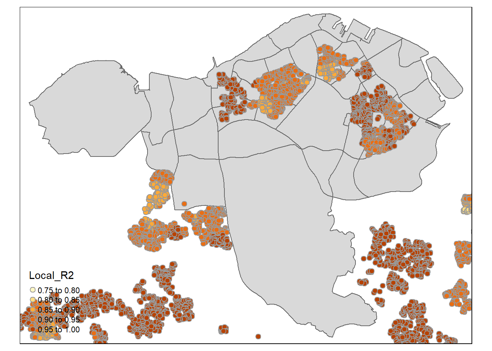

pacman::p_load(sf, spdep, GWmodel, SpatialML, tmap, rsample, Metrics, tidyverse, spatstat, httr, jsonlite, rvest)
set.seed(1234)Take Home Exercise 3
3 Introduction
Housing is a critical component of household wealth across the globe, and purchasing a home represents one of the most significant investments for many individuals. Housing prices are influenced by various factors, some of which are global—such as a country’s economic conditions and inflation rates—while others are specific to the properties themselves. These factors can be broadly categorized into structural and locational aspects.
Structural factors are attributes directly related to the property, such as its size, features, and ownership tenure. In contrast, locational factors pertain to the surrounding neighborhood and accessibility, including proximity to childcare centers, public transportation, and shopping facilities.
Traditionally, predictive models for housing resale prices have relied on the Ordinary Least Squares (OLS) method. However, OLS does not account for spatial autocorrelation and spatial heterogeneity—two common characteristics in geographical data like housing transactions. Ignoring spatial autocorrelation can lead to biased, inconsistent, or inefficient results in predictive housing pricing models (Anselin, 1998). To address this limitation, Geographically Weighted Models (GWMs) have been introduced, offering a more accurate approach to calibrating predictive models for housing resale prices by accounting for spatial variability.
3.1 Data and Packages
For this exercise, we use HDB Resale Flat Prices provided by Data.gov.sg should be used as the core data set. The study should focus on either three-room, four-room or five-room flat.

The following data-sets are used to incorporate locational factors:
CHAS Clinics
Eldercare
Supermarkets
Hawkers
Kindergartens
Parks
Childcare
All of the above have been acquired from data.gov.sg. The below have been acquired from LTADataMall.
MRTs
Bus Stops


All the above datasets are downloaded from two main data sources- data.gov.sg and LTADataMall.
We will use the following packages for our analysis:
sf: R package for handling, analyzing, and visualizing spatial data using simple features.
spdep: R package for spatial dependence modeling, including spatial autocorrelation and regression analysis.
GWmodel: R package for geographically weighted regression (GWR) and other localized spatial models.
SpatialML: R package for spatial machine learning, offering tools for spatially explicit predictive modeling.
tmap: R package for creating thematic maps, offering a flexible and layered approach for spatial visualization.
rsample: R package for resampling datasets, facilitating model training and evaluation with various sampling methods.
Metrics: R package for calculating common metrics for regression and classification models, such as RMSE and accuracy.
tidyverse: A collection of R packages designed for data manipulation, analysis, and visualization in a consistent and coherent syntax.
spatstat: A package for spatial data analysis, particularly focused on point pattern analysis. It provides tools for modeling, simulation, and visualization of spatial point patterns on various geometries.
httr: A package for working with HTTP requests in R, facilitating interactions with web APIs by simplifying the process of sending requests (GET, POST, etc.), handling responses, and managing authentication.
jsonlite: A package for parsing and generating JSON data in R, known for its simple, reliable conversion between R objects and JSON, making it essential for data exchange with web services.
rvest: A web scraping package that allows users to easily harvest data from HTML web pages. It simplifies navigating, parsing, and extracting structured data from websites.
Please click the link and refer to the documentation for any packages that you are interested to know more about.
We use the p_load() function of the pacman package to load these packages into our environment.
3.1.2 Importing the data
3.1.2.1 Aspatial Data
The aspatial data for this exercise is the HDB Flat Resale data that we acquired from data.gov.sg.
We implement the read_csv() function to import this data-set into our environment.
We filter our data down to the time of interest- January 2023 till September 2024.
resale <- read_csv("data/aspatial/resale.csv") %>%
filter(month >= "2023-01" & month <= "2024-09")Additionally, we are going to focus on 3/4/5 room flats for this study.
rooms=c('3 ROOM', '4 ROOM', '5 ROOM')
resale=resale%>%
filter(flat_type %in% rooms)We have over 43000 flats in our study.
The below code chunk tidies the data by combining the block and street_name columns to form the entire address.
Doing this will allow us to obtain the geographical coordinates accurately to facilitate the creation of our predictive model.
resale_tidy <- resale %>%
mutate(address = paste(block,street_name)) %>%
mutate(remaining_lease_yr = as.integer(
str_sub(remaining_lease, 0, 2)))%>%
mutate(remaining_lease_mth = as.integer(
str_sub(remaining_lease, 9, 11)))The code chunk below creates a list of unique addresses in order to avoid having the same street and area being geocoded multiple times. Geocoding is usually ‘first come, first serve’, so sorting actually makes the code chunk more efficient.
address_list <- sort(unique(resale_tidy$address))The code chunk below is used in order to acquire the postal codes of the required addresses with the help of geocoding. The jsonlite and rvest packages are important for this.
Geocoding is the process of converting a physical address or place name into geographic coordinates (latitude and longitude). This allows location data in address format to be mapped, visualized, and analyzed in spatial systems.
For example, if you have an address like “1600 Amphitheatre Parkway, Mountain View, CA,” geocoding will convert it into coordinates, such as 37.4220° N, 122.0841° W.
Geocoding is applied for a multitude of reasons, such as:
- Mapping and navigation services: To display locations on maps or provide directions.
- Location-based services: For ride-sharing, food delivery, and on-demand services, geocoding enables finding the user’s location.
- Data analysis: Geocoding addresses in datasets allows analysis based on geography, such as customer distribution, logistics, and demographic studies.
Geocoding is typically done through APIs like Google Maps, OpenStreetMap, or OneMap in Singapore (which we will be using), which processes the address and returns the corresponding coordinates for our use.
We start by defining a function get_coords.
get_coords <- function(address_list){
# Create a data frame to store all retrieved coordinates
postal_coords <- data.frame()
for (i in add_list){
#print(i)
r <- GET('https://www.onemap.gov.sg/api/common/elastic/search?',
query=list(searchVal=i,
returnGeom='Y',
getAddrDetails='Y'))
data <- fromJSON(rawToChar(r$content))
found <- data$found
res <- data$results
# Create a new data frame for each address
new_row <- data.frame()
# If single result, append
if (found == 1){
postal <- res$POSTAL
lat <- res$LATITUDE
lng <- res$LONGITUDE
new_row <- data.frame(address= i,
postal = postal,
latitude = lat,
longitude = lng)
}
# If multiple results, drop NIL and append top 1
else if (found > 1){
# Remove those with NIL as postal
res_sub <- res[res$POSTAL != "NIL", ]
# Set as NA first if no Postal
if (nrow(res_sub) == 0) {
new_row <- data.frame(address= i,
postal = NA,
latitude = NA,
longitude = NA)
}
else{
top1 <- head(res_sub, n = 1)
postal <- top1$POSTAL
lat <- top1$LATITUDE
lng <- top1$LONGITUDE
new_row <- data.frame(address= i,
postal = postal,
latitude = lat,
longitude = lng)
}
}
else {
new_row <- data.frame(address= i,
postal = NA,
latitude = NA,
longitude = NA)
}
# Add the row
postal_coords <- rbind(postal_coords, new_row)
}
return(postal_coords)
}coords <- get_coords(address_list)write_rds(coords, "data/rds/coords.rds")coords=read_rds('data/rds/coords.rds')Now that we have obtained the coordinates, we can create an sf object by using the st_as_sf() function of the sf package as shown in the code chunk below.
Converting it into an sf data-frame is necessary to conduct analysis and ensure consistent geometries. We first set the EPSG code to 4326 as it is undefined, and then convert it to the correct EPSG code of 3414 for Singapore. Skipping out on setting the initial CRS as 4326 will cause issues down the line as the geometries will not be accurate.
resale_sf=st_as_sf(coords, coords = c('longitude', 'latitude'), crs= 4326, agr = 'constant')%>%
st_transform(crs=3414)We now change a few columns in a way that can facilitate analysis.
We start off by changing storey ranges from bins to numeric values depicting a scale, such as floor 1-3 will be 1- which means its the lowest. We will do this for the resale_tidy data-frame generated earlier as this is what we will use to join with the prepared data-frame later.
# First determine all the unique ranges
unique_storey_ranges <- unique(resale_tidy$storey_range)
print(unique_storey_ranges) [1] "04 TO 06" "25 TO 27" "07 TO 09" "01 TO 03" "10 TO 12" "13 TO 15"
[7] "16 TO 18" "22 TO 24" "19 TO 21" "34 TO 36" "28 TO 30" "37 TO 39"
[13] "31 TO 33" "40 TO 42" "43 TO 45" "46 TO 48" "49 TO 51"Now, we can generate numeric values instead. This is done in the below code chunk.
resale_tidy <- resale_tidy %>%
mutate(
min_storey = as.numeric(str_extract(storey_range, "^[0-9]+")),
storey_scale = ((min_storey - 1) %/% 3) + 1
) %>%
select(-min_storey) We implement the head() function to verify if it has been created as intended.
head(resale_tidy)# A tibble: 6 × 15
month town flat_type block street_name storey_range floor_area_sqm flat_model
<chr> <chr> <chr> <chr> <chr> <chr> <dbl> <chr>
1 2023… ANG … 3 ROOM 225 ANG MO KIO… 04 TO 06 67 New Gener…
2 2023… ANG … 3 ROOM 310C ANG MO KIO… 25 TO 27 70 Model A
3 2023… ANG … 3 ROOM 225 ANG MO KIO… 07 TO 09 67 New Gener…
4 2023… ANG … 3 ROOM 319 ANG MO KIO… 04 TO 06 73 New Gener…
5 2023… ANG … 3 ROOM 319 ANG MO KIO… 07 TO 09 73 New Gener…
6 2023… ANG … 3 ROOM 220 ANG MO KIO… 04 TO 06 67 New Gener…
# ℹ 7 more variables: lease_commence_date <dbl>, remaining_lease <chr>,
# resale_price <dbl>, address <chr>, remaining_lease_yr <int>,
# remaining_lease_mth <int>, storey_scale <dbl>Now, we want to create a column total_remaining_lease that shows the number of months remaining on the lease, where we combine the total remaining number of years and months into a singular column and show the total in months.
We noticed quite a few values shown as NA, for example if exactly 94 years were left on the lease, then the month column would show NA. We need to fix this before proceeding else it causes issues.
resale_tidy <- resale_tidy %>%
mutate(
remaining_lease_mth = ifelse(is.na(remaining_lease_mth), 0, remaining_lease_mth),
remaining_lease_yr = ifelse(is.na(remaining_lease_yr), 0, remaining_lease_yr)
)# Combine remaining_yr and remaining_mth into total_remaining in months
resale_tidy <- resale_tidy %>%
mutate(total_remaining_lease = (remaining_lease_yr * 12) + remaining_lease_mth)head(resale_tidy)# A tibble: 6 × 16
month town flat_type block street_name storey_range floor_area_sqm flat_model
<chr> <chr> <chr> <chr> <chr> <chr> <dbl> <chr>
1 2023… ANG … 3 ROOM 225 ANG MO KIO… 04 TO 06 67 New Gener…
2 2023… ANG … 3 ROOM 310C ANG MO KIO… 25 TO 27 70 Model A
3 2023… ANG … 3 ROOM 225 ANG MO KIO… 07 TO 09 67 New Gener…
4 2023… ANG … 3 ROOM 319 ANG MO KIO… 04 TO 06 73 New Gener…
5 2023… ANG … 3 ROOM 319 ANG MO KIO… 07 TO 09 73 New Gener…
6 2023… ANG … 3 ROOM 220 ANG MO KIO… 04 TO 06 67 New Gener…
# ℹ 8 more variables: lease_commence_date <dbl>, remaining_lease <chr>,
# resale_price <dbl>, address <chr>, remaining_lease_yr <int>,
# remaining_lease_mth <dbl>, storey_scale <dbl>, total_remaining_lease <dbl>3.1.2.2 Geospatial Data
We first import the URA Master Plan data by implementing the st_read() function of the sf package.
Additionally, we ensure that the CRS information is consistent with that of Singapore to facilitate the creation of our predictive model. The st_transform() function of the sf package is implemented for this.
mpsz=st_read(dsn = 'data/geospatial', layer='MP14_SUBZONE_WEB_PL')%>%
st_transform(crs=3414)Reading layer `MP14_SUBZONE_WEB_PL' from data source
`C:\arjxn11\ISSS626-GAA\Take-home_Ex\Take-home_Ex3\data\geospatial'
using driver `ESRI Shapefile'
Simple feature collection with 323 features and 15 fields
Geometry type: MULTIPOLYGON
Dimension: XY
Bounding box: xmin: 2667.538 ymin: 15748.72 xmax: 56396.44 ymax: 50256.33
Projected CRS: SVY21The EPSG code of Singapore is 3414.
3.1.2.2.1 Extracting the CBD
cbd_spots=c('ORCHARD', 'SINGAPORE RIVER', 'DOWNTOWN CORE', 'MUSUEM', 'RIVER VALLEY', 'NEWTON', ' ROCHOR', 'OUTRAM')cbd=mpsz%>%
filter(PLN_AREA_N %in% cbd_spots)%>%
st_transform(crs=3414)We verify if it has been extracted as expected by plotting a highly cartographic map using the tmap package.
tmap_mode('plot')
tm_shape(cbd)+
tm_polygons(col = 'green')tmap_mode('plot')3.1.2.2 Locational Factors (Geospatial)
We will now import a number of data-sets that carry the data necessary for us to measure the impact of proximity to these facilities on housing prices.
Additionally, we ensure that the CRS information is consistent with that of Singapore to facilitate the creation of our predictive model. The st_transform() function of the sf package is implemented for this.
Note that some data-sets may have 3-dimensional geometry, that is Point Z. To convert this to point form, we use the st_zm() function and set the drop argument to TRUE.
eldercare= st_read(dsn='data/locational_factors', layer='ELDERCARE')%>%
st_transform(crs=3414)Reading layer `ELDERCARE' from data source
`C:\arjxn11\ISSS626-GAA\Take-home_Ex\Take-home_Ex3\data\locational_factors'
using driver `ESRI Shapefile'
Simple feature collection with 133 features and 18 fields
Geometry type: POINT
Dimension: XY
Bounding box: xmin: 14481.92 ymin: 28218.43 xmax: 41665.14 ymax: 46804.9
Projected CRS: SVY21CHAS=st_read('data/locational_factors/CHASClinics.kml')%>%
st_transform(crs=3414)Reading layer `MOH_CHAS_CLINICS' from data source
`C:\arjxn11\ISSS626-GAA\Take-home_Ex\Take-home_Ex3\data\locational_factors\CHASClinics.kml'
using driver `KML'
Simple feature collection with 1193 features and 2 fields
Geometry type: POINT
Dimension: XYZ
Bounding box: xmin: 103.5818 ymin: 1.016264 xmax: 103.9903 ymax: 1.456037
z_range: zmin: 0 zmax: 0
Geodetic CRS: WGS 84supermarket=st_read('data/locational_factors/SupermarketsKML.kml')%>%
st_transform(crs=3414)Reading layer `SUPERMARKETS' from data source
`C:\arjxn11\ISSS626-GAA\Take-home_Ex\Take-home_Ex3\data\locational_factors\SupermarketsKML.kml'
using driver `KML'
Simple feature collection with 526 features and 2 fields
Geometry type: POINT
Dimension: XYZ
Bounding box: xmin: 103.6258 ymin: 1.24715 xmax: 104.0036 ymax: 1.461526
z_range: zmin: 0 zmax: 0
Geodetic CRS: WGS 84supermarket <- st_zm(supermarket, drop = TRUE, what = "ZM")mrt=st_read(dsn='data/locational_factors', layer='RapidTransitSystemStation')%>%
st_transform(crs=3414)
Sys.setenv(OGR_GEOMETRY_ACCEPT_UNCLOSED_RING = "NO")
mrt <- mrt[!st_is_empty(mrt), ]
# Convert Polygon to Point
mrt <- st_centroid(mrt)Generally, GDAL (Geospatial Data Abstraction Library) might accept polygons with unclosed rings which may result in invalid geometries. These cause issues when conducting spatial analysis and operations on R. Setting the OGR_GEOMETRY_ACCEPT_UNCLOSED_RING=‘NO’ tells GDAL explicitly to reject these unclosed rings.
Given we have modified the mrt data, we will create an RDS file to facilitate computational efficiency. The write_rds() function is used to create and store the RDS file on the local system. The read_rds() function is used to import it into our environment.
write_rds(mrt, 'data/rds/mrt.rds')mrt=read_rds('data/rds/mrt.rds')bus=st_read(dsn='data/locational_factors', layer='BusStop')%>%
st_transform(crs=3414)Reading layer `BusStop' from data source
`C:\arjxn11\ISSS626-GAA\Take-home_Ex\Take-home_Ex3\data\locational_factors'
using driver `ESRI Shapefile'
Simple feature collection with 5166 features and 3 fields
Geometry type: POINT
Dimension: XY
Bounding box: xmin: 3970.122 ymin: 26482.1 xmax: 48285.52 ymax: 52983.82
Projected CRS: SVY21hawkers=st_read('data/locational_factors/HawkerCentresGEOJSON.geojson')%>%
st_transform(crs=3414)Reading layer `HawkerCentresGEOJSON' from data source
`C:\arjxn11\ISSS626-GAA\Take-home_Ex\Take-home_Ex3\data\locational_factors\HawkerCentresGEOJSON.geojson'
using driver `GeoJSON'
Simple feature collection with 125 features and 2 fields
Geometry type: POINT
Dimension: XYZ
Bounding box: xmin: 103.6974 ymin: 1.272716 xmax: 103.9882 ymax: 1.449017
z_range: zmin: 0 zmax: 0
Geodetic CRS: WGS 84kindergartens=st_read('data/locational_factors/Kindergartens.geojson')%>%
st_transform(crs=3414)Reading layer `Kindergartens' from data source
`C:\arjxn11\ISSS626-GAA\Take-home_Ex\Take-home_Ex3\data\locational_factors\Kindergartens.geojson'
using driver `GeoJSON'
Simple feature collection with 448 features and 2 fields
Geometry type: POINT
Dimension: XYZ
Bounding box: xmin: 103.6887 ymin: 1.247759 xmax: 103.9717 ymax: 1.455452
z_range: zmin: 0 zmax: 0
Geodetic CRS: WGS 84parks=st_read('data/locational_factors/Parks.geojson')%>%
st_transform(crs=3414)Reading layer `Parks' from data source
`C:\arjxn11\ISSS626-GAA\Take-home_Ex\Take-home_Ex3\data\locational_factors\Parks.geojson'
using driver `GeoJSON'
Simple feature collection with 430 features and 2 fields
Geometry type: POINT
Dimension: XYZ
Bounding box: xmin: 103.6929 ymin: 1.214491 xmax: 104.0538 ymax: 1.462094
z_range: zmin: 0 zmax: 0
Geodetic CRS: WGS 84childcare=st_read(dsn='data/locational_factors', layer='CHILDCARE')%>%
st_transform(crs=3414)Reading layer `CHILDCARE' from data source
`C:\arjxn11\ISSS626-GAA\Take-home_Ex\Take-home_Ex3\data\locational_factors'
using driver `ESRI Shapefile'
Simple feature collection with 1885 features and 1 field
Geometry type: POINT
Dimension: XY
Bounding box: xmin: 11226.55 ymin: 25523.51 xmax: 44936.07 ymax: 49308.17
Projected CRS: SVY21 / Singapore TMgym=st_read('data/locational_factors/GymsSGGEOJSON.geojson')%>%
st_transform(crs=3414)Reading layer `GymsSGGEOJSON' from data source
`C:\arjxn11\ISSS626-GAA\Take-home_Ex\Take-home_Ex3\data\locational_factors\GymsSGGEOJSON.geojson'
using driver `GeoJSON'
Simple feature collection with 159 features and 2 fields
Geometry type: POINT
Dimension: XYZ
Bounding box: xmin: 103.6938 ymin: 1.262063 xmax: 103.9518 ymax: 1.435078
z_range: zmin: 0 zmax: 0
Geodetic CRS: WGS 84## Dropping Z
gym<- st_zm(gym, drop = TRUE, what = "ZM")Now that we have imported relevant locational factors, we want to determine the proximity of flats to these factors. We will do so in the next section below.
3.2 Data Wrangling and Manipulation
We calculate the number of data points within a distance. We will use the st_buffer() function of the sf package for this.
if we set the dist argument to 1000, we create a buffer of 1KM around each point in the resale data-set.This allows us to determine the number of data-points of other Points of Interest within this zone.
# We first create a buffer. Alter this based on the input data. (eg: 200m for bus stops, 1000m for medical and care facilities, schools, parks and supermarkets)
buffer_200m=st_buffer(resale_sf, dist=200)
buffer_500m=st_buffer(resale_sf, dist=500)
buffer_1000m=st_buffer(resale_sf, dist=1000)# 200M
buffer_200m$bus_pts_count= lengths(
st_intersects(buffer_200m, bus)
)
buffer_200m$chas_pts_count= lengths(
st_intersects(buffer_200m, CHAS)
)
buffer_200m$eldercare_pts_count= lengths(
st_intersects(buffer_200m, eldercare)
)
#500m
buffer_500m$hawker_pts_count= lengths(
st_intersects(buffer_500m, hawkers)
)
buffer_500m$supermarket_pts_count= lengths(
st_intersects(buffer_500m, supermarket)
)
buffer_500m$childcare_pts_count= lengths(
st_intersects(buffer_500m, childcare)
)
# 1000M
buffer_1000m$park_pts_count= lengths(
st_intersects(buffer_1000m, parks)
)
buffer_1000m$mrt_pts_count= lengths(
st_intersects(buffer_1000m, mrt)
)
buffer_1000m$gym_pts_count=lengths(
st_intersects(buffer_1000m, gym)
)3.2.1 Combining Data-frames
After creating the above data-frames (buffer_200m, buffer_500m, and buffer_1000m), we join all of these together to create one data-frame containing all relevant counts.
The steps are as follows:
The first step is to drop the geometry for a data-frame to facilitate the join. As seen below, we do it first for
buffer_1000mand then combine it withbuffer_200m. We use the st_drop_geometry() function for this. We select the columns we want to extract from buffer_1000m using the select function as well.Second, we use the left_join() function of dplyr and join
buffer_200mwithbuffer_1000m_no_geomby using the common keys.
Do note that the bind_rows() simply stacks these data-frames.
# Drop geometry from `y` and select only the necessary columns
buffer_1000m_no_geom <- buffer_1000m %>%
st_drop_geometry() %>%
select(address, postal, park_pts_count, gym_pts_count, mrt_pts_count)
# Perform a join on the common columns (address and postal)
combined_sf <- buffer_200m %>%
left_join(buffer_1000m_no_geom, by = c("address", "postal"))We repeat the above steps to join buffer_500m. We name the resulting data-frame points_count as it contains all relevant point counts that we generated.
buffer_500m_no_geom <- buffer_500m %>%
st_drop_geometry() %>%
select(address, postal, hawker_pts_count, supermarket_pts_count, childcare_pts_count)
# Perform a join on the common columns (address and postal)
points_count <- combined_sf %>%
left_join(buffer_500m_no_geom, by = c("address", "postal"))3.2.2 Distance Matrix
The next step of our analysis is to determine the proximity of each location to the closest locational factor. The distance will denoted in metres, as Singapores coordinates are projected in SVY21.
The st_distance() function is applied to determines pairwise distances between points in the two data-frames. After that, we use the apply() function to obtain the minimum distance. This allows us to determine the closest facility to each respective house in our data-frame.
# Calculate distances between all houses and all eldercare facilities
dist_matrix_eldercare <- st_distance(points_count, eldercare)
# Get the minimum distance for each house
min_distances_eldercare <- apply(dist_matrix_eldercare, 1, min)
points_count$nearest_eldercare_dist <- min_distances_eldercare# Calculate distances between all houses and all childcare facilities
dist_matrix_childcare <- st_distance(points_count, childcare)
# Get the minimum distance for each house
min_distances_childcare <- apply(dist_matrix_childcare, 1, min)
points_count$nearest_childcare_dist <- min_distances_childcare# Calculate distances between all houses and all childcare facilities
dist_matrix_mrt <- st_distance(points_count, mrt)
# Get the minimum distance for each house
min_distances_mrt <- apply(dist_matrix_mrt, 1, min)
points_count$nearest_mrt_dist <- min_distances_mrt# Calculate distances between all houses and all childcare facilities
dist_matrix_bus<- st_distance(points_count, bus)
# Get the minimum distance for each house
min_distances_bus <- apply(dist_matrix_bus, 1, min)
points_count$nearest_bus_dist <- min_distances_bus# Calculate distances between all houses and all childcare facilities
dist_matrix_cbd <- st_distance(points_count, cbd)
# Get the minimum distance for each house
min_distances_cbd <- apply(dist_matrix_cbd, 1, min)
points_count$nearest_cbd_dist <- min_distances_cbd# Calculate distances between all houses and all childcare facilities
dist_matrix_chas <- st_distance(points_count, CHAS)
# Get the minimum distance for each house
min_distances_chas <- apply(dist_matrix_chas, 1, min)
points_count$nearest_chas_dist <- min_distances_chas# Calculate distances between all houses and all childcare facilities
dist_matrix_parks <- st_distance(points_count, parks)
# Get the minimum distance for each house
min_distances_parks <- apply(dist_matrix_parks, 1, min)
points_count$nearest_park_dist <- min_distances_parks# Calculate distances between all houses and all childcare facilities
dist_matrix_supermarket <- st_distance(points_count, supermarket)
# Get the minimum distance for each house
min_distances_supermarket <- apply(dist_matrix_supermarket, 1, min)
points_count$nearest_childcare_dist <- min_distances_supermarket# Calculate distances between all houses and all childcare facilities
dist_matrix_kg <- st_distance(points_count, kindergartens)
# Get the minimum distance for each house
min_distances_kg <- apply(dist_matrix_kg, 1, min)
points_count$nearest_kindergarten_dist <- min_distances_kg# Calculate distances between all houses and all childcare facilities
dist_matrix_gym <- st_distance(points_count, gym)
# Get the minimum distance for each house
min_distances_gym <- apply(dist_matrix_gym, 1, min)
points_count$nearest_gym_dist <- min_distances_gymWe now create an RDS file using the write_rds() function to facilitate computational efficiency.
write_rds(points_count, 'data/rds/points_count.rds')points_count=read_rds('data/rds/points_count.rds')We now join points_count back with resale_tidy in order to have all the details consolidated. We use the left_join() function and join using the common key of address. We will only keep selected rows for our analysis. We name this data-frame resale_data.
resale_data= points_count %>%
left_join(resale_tidy, by = "address")We can check if the columns have been selected as intended by using the head() function as shown in the code chunk below.
head(resale_data)Simple feature collection with 6 features and 35 fields
Geometry type: POLYGON
Dimension: XY
Bounding box: xmin: 31267.83 ymin: 31578.89 xmax: 39373.81 ymax: 33878.86
Projected CRS: SVY21 / Singapore TM
address postal bus_pts_count chas_pts_count eldercare_pts_count
1 1 BEACH RD 190001 3 1 4
2 1 BEACH RD 190001 3 1 4
3 1 BEACH RD 190001 3 1 4
4 1 BEACH RD 190001 3 1 4
5 1 BEDOK STH AVE 1 460001 1 1 0
6 1 BEDOK STH AVE 1 460001 1 1 0
park_pts_count gym_pts_count mrt_pts_count hawker_pts_count
1 3 8 3 2
2 3 8 3 2
3 3 8 3 2
4 3 8 3 2
5 6 1 1 1
6 6 1 1 1
supermarket_pts_count childcare_pts_count nearest_eldercare_dist
1 1 2 0.0000
2 1 2 0.0000
3 1 2 0.0000
4 1 2 0.0000
5 2 7 139.7537
6 2 7 139.7537
nearest_childcare_dist nearest_mrt_dist nearest_bus_dist nearest_cbd_dist
1 0 237.9981 0 506.204
2 0 237.9981 0 506.204
3 0 237.9981 0 506.204
4 0 237.9981 0 506.204
5 0 327.2657 0 8060.530
6 0 327.2657 0 8060.530
nearest_chas_dist nearest_park_dist nearest_kindergarten_dist
1 0 13.57091 217.3620
2 0 13.57091 217.3620
3 0 13.57091 217.3620
4 0 13.57091 217.3620
5 0 239.50824 221.8531
6 0 239.50824 221.8531
nearest_gym_dist month town flat_type block street_name
1 335.3991 2023-07 KALLANG/WHAMPOA 3 ROOM 1 BEACH RD
2 335.3991 2023-12 KALLANG/WHAMPOA 3 ROOM 1 BEACH RD
3 335.3991 2024-01 KALLANG/WHAMPOA 3 ROOM 1 BEACH RD
4 335.3991 2024-05 KALLANG/WHAMPOA 3 ROOM 1 BEACH RD
5 554.4620 2023-04 BEDOK 3 ROOM 1 BEDOK STH AVE 1
6 554.4620 2023-08 BEDOK 3 ROOM 1 BEDOK STH AVE 1
storey_range floor_area_sqm flat_model lease_commence_date remaining_lease
1 07 TO 09 74 Improved 1979 55 years 03 months
2 10 TO 12 68 Improved 1979 54 years 10 months
3 07 TO 09 68 Improved 1979 54 years 09 months
4 04 TO 06 68 Improved 1979 54 years 05 months
5 04 TO 06 59 Improved 1976 51 years 10 months
6 10 TO 12 59 Improved 1976 51 years 05 months
resale_price remaining_lease_yr remaining_lease_mth storey_scale
1 440000 55 3 3
2 418000 54 10 4
3 440000 54 9 3
4 425000 54 5 2
5 335000 51 10 2
6 370000 51 5 4
total_remaining_lease geometry
1 663 POLYGON ((31667.83 31778.89...
2 658 POLYGON ((31667.83 31778.89...
3 657 POLYGON ((31667.83 31778.89...
4 653 POLYGON ((31667.83 31778.89...
5 622 POLYGON ((39373.81 33678.86...
6 617 POLYGON ((39373.81 33678.86...3.3 Data Overview
3.3.1 Popular Towns
To determine which region has the most the number of flats sold in our selected time period.
We must first compute the count, that is total sales, in each town. We do so using the group_by() and summarise() function of the dplyr package.
town_sales_count <- resale_data %>%
group_by(town) %>%
summarize(sales_count = n())To determine the top region we simply implement the filter() function as in the code chunk below.
top_region <- town_sales_count %>%
filter(sales_count == max(sales_count))
(top_region)Simple feature collection with 1 feature and 2 fields
Geometry type: POLYGON
Dimension: XY
Bounding box: xmin: 34120.85 ymin: 41356.12 xmax: 37815.35 ymax: 44133.95
Projected CRS: SVY21 / Singapore TM
# A tibble: 1 × 3
town sales_count geometry
* <chr> <int> <POLYGON [m]>
1 PUNGGOL 3446 ((34342.41 42405.26, 34331.94 42405.54, 34321.5 42406.36,…Punggol appears the region with the most sales at just over 3400 sales in the selected time period.
We implement the tmap package to generate a map to help us visualize the sales count across all towns.
tmap_mode('plot')
tm_shape(town_sales_count) +
tm_polygons("sales_count",
title = "Sales Count",
palette = "Reds",
style = "jenks") +
tm_layout(title = "Sales Count by Town")+
tmap_options(check.and.fix = TRUE)Eastern Singapore, regions such as Punggol, Sengkang, and Tampines appear to have the most sales. The Central and Western Region are relatively mild compared to Northern and Eastern Singapore in terms of sales count.
3.3.2 Price Trends
We want to gain an idea of the price trends across the different regions across the nation.
To do this, an average must be computed. We do so by implementing the group_by() and summarise() functions of the dplyr package.
town_avg <- resale_data %>%
group_by(town) %>%
summarize(avg_resale_price = mean(resale_price, na.rm = TRUE))Now that this has been computed, we can join it back with resale_data so that we can map it using the tmap package.
tmap_mode('plot')
tm_shape(town_avg) +
tm_polygons("avg_resale_price",
title = "Average Resale Price",
palette = "Blues",
style = "jenks") +
tm_layout(title = "Average Resale Price by Town")+
tmap_options(check.and.fix = TRUE)
We infer from the above that the Western region, towns like Jurong West, in particular seems to relatively cheaper compared to the rest of the towns.
The central region in particular, unsurprisingly, seems to have the highest resale price on average. This could be due to a variety of factors such as its proximity to the CBD, national hospitals etc.
Do note that we are focusing on 3/4/5 room flats and hence there are a few empty regions, as seen in the map above.
3.3.3 Does the level at which the apartment is on impact its price?
We are interested to determine whether or not the level impacts floor pricing, that is whether an apartment on level 13 is more expensive than an apartment on level 5.
ggplot(resale_data, aes(x = factor(storey_scale), y = resale_price)) +
geom_boxplot(fill = "lightblue", color = "black", outlier.color = "red") +
labs(
title = "Resale Price Variation by Storey Scale",
x = "Storey Scale",
y = "Resale Price"
) +
theme_minimal()We see a clear rise in flat prices they higher the level the flat is on, a pretty significant increase at every level.
We will keep an eye on this when creating the predictive model,
3.4 Predictive Models
3.4.1 Correlation
The key step that MUST be done before building a predictive model of any sort is to check for multicollinearity.
For this, we will also drop geometry using the st_drop_geometry() function.
resale_nogeo <- resale_data %>%
st_drop_geometry()
corrplot::corrplot(cor(resale_nogeo[, c(3:18, 27, 34:35)]),
diag = FALSE,
order = "AOE",
tl.pos = "td",
tl.cex = 0.5,
method = "number",
type = "upper",
number.cex = 0.6)
sapply(resale_nogeo[, c(3:18, 27, 34:35)], class) bus_pts_count chas_pts_count eldercare_pts_count
"integer" "integer" "integer"
park_pts_count gym_pts_count mrt_pts_count
"integer" "integer" "integer"
hawker_pts_count supermarket_pts_count childcare_pts_count
"integer" "integer" "integer"
nearest_eldercare_dist nearest_childcare_dist nearest_mrt_dist
"numeric" "numeric" "numeric"
nearest_bus_dist nearest_cbd_dist nearest_chas_dist
"numeric" "numeric" "numeric"
nearest_park_dist floor_area_sqm storey_scale
"numeric" "numeric" "numeric"
total_remaining_lease
"numeric" sum(is.na(resale_nogeo[[35]])) # Count of NA values[1] 0sum(is.infinite(resale_nogeo[[35]])) # Count of Inf values[1] 0From the above, we infer that there is no collinearity issue that could impact our model negatively.
Despite there being a few values of magnitude >0.5, this is not enough to make us drop the predictor. Generally, it is a matter of concern if the value is above 0.8.
3.4.2 Hedonic Pricing Model
Hedonic pricing modeling is an econometric technique used to estimate the value of a good or service by breaking down the price into its component attributes. Commonly applied in real estate, it involves analyzing how individual factors such as location, size, amenities, or proximity to schools influence the overall market price of a property. This model helps in understanding how much each characteristic contributes to the price, separating the effect of specific features from the overall value.
We implement the lm() function of base R to build hedonic pricing models for condominium resale units.
First and foremost, we noticed that the geometry is in polygon form. We will implement the st_centroid() function of the sf package to convert this into point form as shown in the below code chunk.
resale_data=st_centroid(resale_data)We start off by filtering the data to include only the relevant columns for our analysis, including filtering out all data for the year 2024 as we are to train the model using 2023 data.
We will change the order of columns in the resulting data-sets too to facilitate easier reading.
# Filter out 2024
resale_2023=resale_data%>%
filter(month<="2023-12")%>%
select(3:20,27,31, 34:35)
# Reorder Cols
resale_2023=resale_2023[, c(22:1,23)]# Filter out 2023
resale_2024=resale_data%>%
filter(month>="2024-07" & month<="2024-09")%>%
select(3:20,27,31, 34:35)
# Reorder Cols
resale_2024=resale_2024[, c(22:1,23)]Now that we have checked for multicollinearity and created the required data-frame, we proceed with creating the predictive model.
To build a hedonic model, we simply apply the lm() function as mentioned earlier.
The below code chunk shows the implementation.
hdb.mlr <- lm(formula = resale_price ~ total_remaining_lease + storey_scale + floor_area_sqm + nearest_gym_dist + nearest_kindergarten_dist + nearest_park_dist + nearest_chas_dist + nearest_cbd_dist + nearest_bus_dist + nearest_mrt_dist + nearest_childcare_dist + nearest_eldercare_dist + childcare_pts_count + supermarket_pts_count + hawker_pts_count + mrt_pts_count + gym_pts_count + park_pts_count + eldercare_pts_count + chas_pts_count + bus_pts_count
,
data=resale_2023)
summary(hdb.mlr)
Call:
lm(formula = resale_price ~ total_remaining_lease + storey_scale +
floor_area_sqm + nearest_gym_dist + nearest_kindergarten_dist +
nearest_park_dist + nearest_chas_dist + nearest_cbd_dist +
nearest_bus_dist + nearest_mrt_dist + nearest_childcare_dist +
nearest_eldercare_dist + childcare_pts_count + supermarket_pts_count +
hawker_pts_count + mrt_pts_count + gym_pts_count + park_pts_count +
eldercare_pts_count + chas_pts_count + bus_pts_count, data = resale_2023)
Residuals:
Min 1Q Median 3Q Max
-369313 -42975 -5377 35844 495189
Coefficients:
Estimate Std. Error t value Pr(>|t|)
(Intercept) -2.044e+05 4.016e+03 -50.905 < 2e-16 ***
total_remaining_lease 4.609e+02 2.929e+00 157.364 < 2e-16 ***
storey_scale 1.567e+04 2.312e+02 67.760 < 2e-16 ***
floor_area_sqm 5.334e+03 2.393e+01 222.915 < 2e-16 ***
nearest_gym_dist -1.127e+00 6.509e-01 -1.731 0.08345 .
nearest_kindergarten_dist -2.628e+01 2.928e+00 -8.976 < 2e-16 ***
nearest_park_dist -1.640e+01 1.252e+00 -13.098 < 2e-16 ***
nearest_chas_dist 4.224e+01 6.664e+00 6.339 2.36e-10 ***
nearest_cbd_dist -1.740e+01 1.632e-01 -106.583 < 2e-16 ***
nearest_bus_dist -7.404e+01 3.278e+01 -2.259 0.02391 *
nearest_mrt_dist -5.559e+01 1.562e+00 -35.590 < 2e-16 ***
nearest_childcare_dist 3.961e+01 3.760e+00 10.533 < 2e-16 ***
nearest_eldercare_dist -1.204e+01 8.543e-01 -14.089 < 2e-16 ***
childcare_pts_count 8.917e+01 1.022e+02 0.872 0.38304
supermarket_pts_count 8.133e+03 3.937e+02 20.657 < 2e-16 ***
hawker_pts_count 3.005e+03 6.881e+02 4.366 1.27e-05 ***
mrt_pts_count -8.003e+03 2.357e+02 -33.949 < 2e-16 ***
gym_pts_count 6.371e+03 2.440e+02 26.116 < 2e-16 ***
park_pts_count 9.779e+02 2.103e+02 4.649 3.35e-06 ***
eldercare_pts_count -6.600e+03 1.048e+03 -6.297 3.09e-10 ***
chas_pts_count 4.053e+03 3.493e+02 11.602 < 2e-16 ***
bus_pts_count -9.146e+02 3.106e+02 -2.944 0.00324 **
---
Signif. codes: 0 '***' 0.001 '**' 0.01 '*' 0.05 '.' 0.1 ' ' 1
Residual standard error: 65330 on 23533 degrees of freedom
Multiple R-squared: 0.8349, Adjusted R-squared: 0.8347
F-statistic: 5666 on 21 and 23533 DF, p-value: < 2.2e-16The above output must be analysed carefully as it provides a lot of details.
- This model accounts for just under 84% of total variation in resale price of HDB flats in 2023.
- All but 2 variables are significant at the 5% significance level-
childcare_pts_countandnearest_gym_dist. - The model is statistically significant.
We first remove out the two insignifcant variables.
Following that we create another model and then implement the ols_regress() function to produce a high quality output table to facilitate easier understanding.
hdb.mlr1= lm(formula = resale_price ~ total_remaining_lease + storey_scale + floor_area_sqm + nearest_kindergarten_dist + nearest_park_dist + nearest_chas_dist + nearest_cbd_dist + nearest_bus_dist + nearest_mrt_dist + nearest_childcare_dist + nearest_eldercare_dist + supermarket_pts_count + hawker_pts_count + mrt_pts_count + gym_pts_count + park_pts_count + eldercare_pts_count + chas_pts_count + bus_pts_count
,
data=resale_2023)
olsrr::ols_regress(hdb.mlr1) Model Summary
--------------------------------------------------------------------------
R 0.914 RMSE 65303.141
R-Squared 0.835 MSE 4268124214.448
Adj. R-Squared 0.835 Coef. Var 11.610
Pred R-Squared 0.834 AIC 589187.126
MAE 49424.028 SBC 589356.535
--------------------------------------------------------------------------
RMSE: Root Mean Square Error
MSE: Mean Square Error
MAE: Mean Absolute Error
AIC: Akaike Information Criteria
SBC: Schwarz Bayesian Criteria
ANOVA
--------------------------------------------------------------------------------
Sum of
Squares DF Mean Square F Sig.
--------------------------------------------------------------------------------
Regression 5.078066e+14 19 2.672666e+13 6261.922 0.0000
Residual 1.004503e+14 23535 4268124214.448
Total 6.082569e+14 23554
--------------------------------------------------------------------------------
Parameter Estimates
-----------------------------------------------------------------------------------------------------------------------
model Beta Std. Error Std. Beta t Sig lower upper
-----------------------------------------------------------------------------------------------------------------------
(Intercept) -203597.900 3946.042 -51.595 0.000 -211332.398 -195863.402
total_remaining_lease 459.308 2.812 0.525 163.355 0.000 453.797 464.819
storey_scale 15677.553 231.213 0.198 67.806 0.000 15224.362 16130.745
floor_area_sqm 5339.281 23.758 0.632 224.738 0.000 5292.714 5385.848
nearest_kindergarten_dist -26.958 2.881 -0.026 -9.357 0.000 -32.605 -21.311
nearest_park_dist -16.227 1.249 -0.044 -12.993 0.000 -18.675 -13.779
nearest_chas_dist 42.466 6.663 0.021 6.374 0.000 29.407 55.526
nearest_cbd_dist -17.437 0.158 -0.426 -110.551 0.000 -17.746 -17.128
nearest_bus_dist -73.651 32.765 -0.006 -2.248 0.025 -137.872 -9.429
nearest_mrt_dist -55.735 1.560 -0.121 -35.734 0.000 -58.792 -52.677
nearest_childcare_dist 39.643 3.759 0.036 10.547 0.000 32.276 47.010
nearest_eldercare_dist -12.528 0.812 -0.048 -15.428 0.000 -14.120 -10.936
supermarket_pts_count 8076.802 386.798 0.065 20.881 0.000 7318.653 8834.952
hawker_pts_count 3054.745 687.479 0.015 4.443 0.000 1707.243 4402.248
mrt_pts_count -8014.650 230.731 -0.122 -34.736 0.000 -8466.897 -7562.403
gym_pts_count 6464.555 234.936 0.083 27.516 0.000 6004.066 6925.044
park_pts_count 995.515 210.156 0.017 4.737 0.000 583.596 1407.434
eldercare_pts_count -6761.275 1044.356 -0.019 -6.474 0.000 -8808.279 -4714.270
chas_pts_count 4085.661 348.576 0.035 11.721 0.000 3402.429 4768.893
bus_pts_count -850.531 308.901 -0.008 -2.753 0.006 -1455.996 -245.065
-----------------------------------------------------------------------------------------------------------------------Another thing that the ols package lets you do is check the VIF, which is another way to check multicollinearity. If the VIF value is 10 or higher, that is when we must be concerned with regards to multicollinearity.
olsrr::ols_vif_tol(hdb.mlr1) Variables Tolerance VIF
1 total_remaining_lease 0.6801054 1.470360
2 storey_scale 0.8264316 1.210022
3 floor_area_sqm 0.8863485 1.128224
4 nearest_kindergarten_dist 0.9395810 1.064304
5 nearest_park_dist 0.6156988 1.624171
6 nearest_chas_dist 0.6727964 1.486334
7 nearest_cbd_dist 0.4719791 2.118738
8 nearest_bus_dist 0.8479954 1.179252
9 nearest_mrt_dist 0.6105314 1.637917
10 nearest_childcare_dist 0.6082884 1.643957
11 nearest_eldercare_dist 0.7341674 1.362087
12 supermarket_pts_count 0.7272130 1.375113
13 hawker_pts_count 0.6531755 1.530982
14 mrt_pts_count 0.5682836 1.759685
15 gym_pts_count 0.7651070 1.307007
16 park_pts_count 0.5726813 1.746172
17 eldercare_pts_count 0.8578425 1.165715
18 chas_pts_count 0.7931092 1.260860
19 bus_pts_count 0.8151291 1.2267993.4.1.1 Spatial Autocorrelation
The hedonic model we try to build are using geographically referenced attributes, hence it is also important for us to visual the residual of the hedonic pricing model.
In order to perform spatial autocorrelation test, we need to convert condo_resale.sf from sf data frame into a SpatialPointsDataFrame.
First, we will export the residual of the hedonic pricing model and save it as a data frame.
mlr.output <- as.data.frame(hdb.mlr1$residuals)Next, we will join the newly created data frame with resale_data object.
hdb_resale.res.sf <- cbind(resale_2023,
hdb.mlr1$residuals) %>%
rename(`MLR_RES` = `hdb.mlr1.residuals`)Next, we will convert hdb_resale.res.sf from simple feature object into a SpatialPointsDataFrame because spdep package can only process sp conformed spatial data objects.
The code chunk below will be used to perform the data conversion process.
hdb_resale.sp <- as_Spatial(hdb_resale.res.sf)
hdb_resale.spclass : SpatialPolygonsDataFrame
features : 23555
extent : 11397.31, 45392.3, 27897.64, 48941.06 (xmin, xmax, ymin, ymax)
crs : +proj=tmerc +lat_0=1.36666666666667 +lon_0=103.833333333333 +k=1 +x_0=28001.642 +y_0=38744.572 +ellps=WGS84 +towgs84=0,0,0,0,0,0,0 +units=m +no_defs
variables : 23
names : total_remaining_lease, storey_scale, resale_price, floor_area_sqm, nearest_gym_dist, nearest_kindergarten_dist, nearest_park_dist, nearest_chas_dist, nearest_cbd_dist, nearest_bus_dist, nearest_mrt_dist, nearest_childcare_dist, nearest_eldercare_dist, childcare_pts_count, supermarket_pts_count, ...
min values : 505, 1, 150000, 52, 0, 0, 0, 0, 0, 0, 0, 0, 0, 0, 0, ...
max values : 1154, 17, 1500000, 176, 4343.0405974637, 2967.56328554691, 2211.7822280043, 2512.20838763233, 17054.6103741159, 191.53318513933, 3292.27569241822, 3125.45180974505, 4567.54414612513, 44, 10, ... Next, we will use tmap package to display the distribution of the residuals on an interactive map.
tmap_mode("plot")
tm_shape(mpsz)+
tmap_options(check.and.fix = TRUE) +
tm_polygons(alpha = 0.4) +
tm_shape(hdb_resale.res.sf) +
tm_dots(col = "MLR_RES",
alpha = 0.6,
style="quantile") +
tm_view(set.zoom.limits = c(11,14))
tmap_mode('plot')There appears to be some clustering. In order to definitively determine whether there is spatial autocorrelation, we implement the Moran’s Test.
- H0: There is no signs of spatial autocorrelation. Observed patterns are due to complete spatial randomness.
- H1: There are signs of spatial autocorrelation.
First, we will compute the distance-based weight matrix by using dnearneigh() function of spdep.
nb <- dnearneigh(coordinates(hdb_resale.sp), 0, 1500, longlat = FALSE)
summary(nb)write_rds(nb, 'data/rds/nb.rds')nb=read_rds('data/rds/nb.rds')Next, the nb2listw() function of the spdep packge will be used to convert the output neighbours lists (i.e. nb) into a spatial weights.
nb_lw <- nb2listw(nb, style = 'W')summary(nb_lw)Next, lm.morantest() of spdep package will be used to perform Moran’s I test for residual spatial autocorrelation
lm.morantest(hdb.mlr1, nb_lw)
From the above output, we can infer that the spatial autocorrelation is statistically significant at the 5% significance level. We have sufficient evidence to reject the null hypothesis and conclude that there indeed signs of spatial clustering.
A value of 577.78 indicates that the observed pattern is very unlikely to be observed due to random chance.
The observed Moran I of approximately 0.2 indicates that there is weak to moderate positive spatial autocorrelation.
3.4.2.1 Hedonic Pricing Model using GWModel (Adaptive Bandwidth Method)
3.4.2.1.1 Computing Adaptive Bandwidth
In the code chunk below, the bw.gwr() function of the GWModel package is used to determine the bandwidth to use in the model.
Adopting the GWmodel approach provides is better for hedonic pricing models because it captures local variations, improves predictive accuracy, accommodates spatial non-stationarity, and offers rich spatial insights through visualization.
These benefits make it particularly suited for real estate markets, where location-specific attributes are crucial determinants of property prices, as in the study that we are conducting with regards to HDB flat resale prices in Singapore.
bw.adaptive=bw.gwr(formula = resale_price ~ total_remaining_lease + storey_scale + floor_area_sqm + nearest_kindergarten_dist + nearest_park_dist + nearest_chas_dist + nearest_cbd_dist + nearest_bus_dist + nearest_mrt_dist + nearest_childcare_dist + nearest_eldercare_dist + supermarket_pts_count + hawker_pts_count + mrt_pts_count + gym_pts_count + park_pts_count + eldercare_pts_count + chas_pts_count + bus_pts_count,
data=hdb_resale.sp,
approach = 'CV',
kernel = 'gaussian',
adaptive = TRUE,
longlat = FALSE)write_rds(bw.adaptive, 'data/rds/bw_adaptive.rds')bw.adaptive=read_rds('data/rds/bw_adaptive.rds')The adaptive bandwidth has been determined to be 92. We will use this value to calibrate the gwr-based hedonic pricing model.
Now, we can go ahead to calibrate the gwr-based hedonic pricing model by using adaptive bandwidth and gaussian kernel as shown in the code chunk below.
gwr.adaptive <- gwr.basic(formula = resale_price ~ total_remaining_lease + storey_scale + floor_area_sqm + nearest_kindergarten_dist + nearest_park_dist + nearest_chas_dist + nearest_cbd_dist + nearest_bus_dist + nearest_mrt_dist + nearest_childcare_dist + nearest_eldercare_dist + supermarket_pts_count + hawker_pts_count + mrt_pts_count + gym_pts_count + park_pts_count + eldercare_pts_count + chas_pts_count + bus_pts_count,
data=hdb_resale.sp, bw=bw.adaptive,
kernel = 'gaussian',
adaptive=TRUE,
longlat = FALSE)
write_rds(gwr.adaptive, 'data/rds/gwr_adapt.rds')The code chunk below can be used to display the model output.
gwr.adaptive=read_rds('data/rds/gwr_adapt.rds')
gwr.adaptive ***********************************************************************
* Package GWmodel *
***********************************************************************
Program starts at: 2024-11-08 08:33:13.835072
Call:
gwr.basic(formula = resale_price ~ total_remaining_lease + storey_scale +
floor_area_sqm + nearest_kindergarten_dist + nearest_park_dist +
nearest_chas_dist + nearest_cbd_dist + nearest_bus_dist +
nearest_mrt_dist + nearest_childcare_dist + nearest_eldercare_dist +
supermarket_pts_count + hawker_pts_count + mrt_pts_count +
gym_pts_count + park_pts_count + eldercare_pts_count + chas_pts_count +
bus_pts_count, data = hdb_resale.sp, bw = bw.adaptive, kernel = "gaussian",
adaptive = TRUE, longlat = FALSE)
Dependent (y) variable: resale_price
Independent variables: total_remaining_lease storey_scale floor_area_sqm nearest_kindergarten_dist nearest_park_dist nearest_chas_dist nearest_cbd_dist nearest_bus_dist nearest_mrt_dist nearest_childcare_dist nearest_eldercare_dist supermarket_pts_count hawker_pts_count mrt_pts_count gym_pts_count park_pts_count eldercare_pts_count chas_pts_count bus_pts_count
Number of data points: 23555
***********************************************************************
* Results of Global Regression *
***********************************************************************
Call:
lm(formula = formula, data = data)
Residuals:
Min 1Q Median 3Q Max
-368270 -42963 -5454 35907 495600
Coefficients:
Estimate Std. Error t value Pr(>|t|)
(Intercept) -2.036e+05 3.946e+03 -51.595 < 2e-16 ***
total_remaining_lease 4.593e+02 2.812e+00 163.355 < 2e-16 ***
storey_scale 1.568e+04 2.312e+02 67.806 < 2e-16 ***
floor_area_sqm 5.339e+03 2.376e+01 224.738 < 2e-16 ***
nearest_kindergarten_dist -2.696e+01 2.881e+00 -9.357 < 2e-16 ***
nearest_park_dist -1.623e+01 1.249e+00 -12.993 < 2e-16 ***
nearest_chas_dist 4.247e+01 6.663e+00 6.374 1.88e-10 ***
nearest_cbd_dist -1.744e+01 1.577e-01 -110.551 < 2e-16 ***
nearest_bus_dist -7.365e+01 3.277e+01 -2.248 0.0246 *
nearest_mrt_dist -5.573e+01 1.560e+00 -35.734 < 2e-16 ***
nearest_childcare_dist 3.964e+01 3.759e+00 10.547 < 2e-16 ***
nearest_eldercare_dist -1.253e+01 8.120e-01 -15.428 < 2e-16 ***
supermarket_pts_count 8.077e+03 3.868e+02 20.881 < 2e-16 ***
hawker_pts_count 3.055e+03 6.875e+02 4.443 8.90e-06 ***
mrt_pts_count -8.015e+03 2.307e+02 -34.736 < 2e-16 ***
gym_pts_count 6.465e+03 2.349e+02 27.516 < 2e-16 ***
park_pts_count 9.955e+02 2.102e+02 4.737 2.18e-06 ***
eldercare_pts_count -6.761e+03 1.044e+03 -6.474 9.73e-11 ***
chas_pts_count 4.086e+03 3.486e+02 11.721 < 2e-16 ***
bus_pts_count -8.505e+02 3.089e+02 -2.753 0.0059 **
---Significance stars
Signif. codes: 0 '***' 0.001 '**' 0.01 '*' 0.05 '.' 0.1 ' ' 1
Residual standard error: 65330 on 23535 degrees of freedom
Multiple R-squared: 0.8349
Adjusted R-squared: 0.8347
F-statistic: 6262 on 19 and 23535 DF, p-value: < 2.2e-16
***Extra Diagnostic information
Residual sum of squares: 1.004503e+14
Sigma(hat): 65305.91
AIC: 589187.1
AICc: 589187.2
BIC: 566012.9
***********************************************************************
* Results of Geographically Weighted Regression *
***********************************************************************
*********************Model calibration information*********************
Kernel function: gaussian
Adaptive bandwidth: 92 (number of nearest neighbours)
Regression points: the same locations as observations are used.
Distance metric: Euclidean distance metric is used.
****************Summary of GWR coefficient estimates:******************
Min. 1st Qu. Median 3rd Qu.
Intercept -6.0447e+07 -5.7658e+05 -2.9193e+05 1.5385e+04
total_remaining_lease -2.1867e+03 3.1391e+02 4.3552e+02 5.7160e+02
storey_scale 3.9638e+03 1.0427e+04 1.2493e+04 1.4685e+04
floor_area_sqm 2.9550e+03 4.4388e+03 5.2097e+03 6.3082e+03
nearest_kindergarten_dist -7.6004e+02 -3.4989e+01 1.1502e+01 5.9307e+01
nearest_park_dist -2.5185e+03 -5.4680e+01 -1.3168e+01 2.3976e+01
nearest_chas_dist -1.2685e+04 -1.0022e+02 -1.2491e+01 7.9737e+01
nearest_cbd_dist -1.8287e+03 -3.6244e+01 -8.0689e+00 2.1907e+01
nearest_bus_dist -5.2268e+04 -3.6632e+02 -4.7123e+01 3.2595e+02
nearest_mrt_dist -1.1221e+03 -8.7319e+01 -4.9292e+01 -5.1243e+00
nearest_childcare_dist -3.1126e+03 -7.2903e+01 -1.1614e+01 4.9044e+01
nearest_eldercare_dist -1.8161e+03 -4.1556e+01 1.3129e+00 4.2830e+01
supermarket_pts_count -3.9322e+04 -2.8775e+03 1.4265e+03 5.2768e+03
hawker_pts_count -8.3780e+06 -6.5949e+03 3.4557e+03 1.7893e+04
mrt_pts_count -2.7134e+05 -6.1669e+03 3.4766e+02 6.0372e+03
gym_pts_count -2.2739e+06 -3.3798e+03 6.6034e+03 1.8959e+04
park_pts_count -2.3557e+05 -6.9592e+03 -8.1926e+02 5.6725e+03
eldercare_pts_count -2.6027e+06 -1.3383e+04 -3.5345e+03 7.7470e+03
chas_pts_count -3.2301e+04 -1.5971e+03 9.4891e+02 3.4014e+03
bus_pts_count -6.3522e+04 -1.6689e+03 2.1774e+02 2.6510e+03
Max.
Intercept 19242493.3
total_remaining_lease 1197.3
storey_scale 24711.6
floor_area_sqm 11560.4
nearest_kindergarten_dist 1881.3
nearest_park_dist 2452.5
nearest_chas_dist 7087.8
nearest_cbd_dist 6990.2
nearest_bus_dist 89747.2
nearest_mrt_dist 4035.8
nearest_childcare_dist 14299.1
nearest_eldercare_dist 1701.4
supermarket_pts_count 90472.1
hawker_pts_count 1257388.2
mrt_pts_count 392945.6
gym_pts_count 6811961.3
park_pts_count 286344.4
eldercare_pts_count 1494614.5
chas_pts_count 99874.4
bus_pts_count 28085.5
************************Diagnostic information*************************
Number of data points: 23555
Effective number of parameters (2trace(S) - trace(S'S)): 2281.846
Effective degrees of freedom (n-2trace(S) + trace(S'S)): 21273.15
AICc (GWR book, Fotheringham, et al. 2002, p. 61, eq 2.33): 558552.4
AIC (GWR book, Fotheringham, et al. 2002,GWR p. 96, eq. 4.22): 556427
BIC (GWR book, Fotheringham, et al. 2002,GWR p. 61, eq. 2.34): 549360.9
Residual sum of squares: 2.318373e+13
R-square value: 0.961885
Adjusted R-square value: 0.9577964
***********************************************************************
Program stops at: 2024-11-08 08:46:54.422807 3.4.2.2 Visualizing GWR Output
In addition to the regression residuals, the output feature class table provides several key metrics, including observed and predicted values, the condition number (cond), Local R², residuals, and the coefficients with their standard errors for the explanatory variables:
Condition Number: This diagnostic assesses local collinearity. When strong local collinearity is present, model results become unstable. A condition number greater than 30 suggests that the results may be unreliable due to multicollinearity.
Local R²: Values range from 0.0 to 1.0 and indicate the goodness-of-fit of the local regression model. Low Local R² values signal poor model performance in those regions. Mapping these values can help identify areas where the Geographically Weighted Regression (GWR) model is performing well and where it is underperforming, potentially highlighting missing or unaccounted-for variables.
Predicted Values: These are the fitted y values estimated by the GWR model.
Residuals: Residuals are calculated by subtracting the fitted y values from the observed y values. Standardized residuals have a mean of zero and a standard deviation of one. A gradient map (cold-to-hot) of standardized residuals can be created to visualize areas of model under- or overestimation.
Coefficient Standard Errors: These values reflect the reliability of each coefficient estimate. Smaller standard errors relative to the actual coefficients indicate higher confidence in the estimates. Large standard errors, however, may suggest issues with local collinearity.
All of these metrics are stored within a SpatialPointsDataFrame or SpatialPolygonsDataFrame object, integrated with the fit points, GWR coefficient estimates, observed and predicted y values, coefficient standard errors, and t-values in the “data” slot of an object called SDF within the output list.
To visualise the fields in SDF, we need to first covert it into sf data.frame by using the code chunk below.
hdb_resale.sf.adaptive <- st_as_sf(gwr.adaptive$SDF) %>%
st_transform(crs=3414)
hdb_resale.sf.adaptive.svy21 <- st_transform(hdb_resale.sf.adaptive, 3414)
hdb_resale.sf.adaptive.svy21 Simple feature collection with 23555 features and 66 fields
Geometry type: POLYGON
Dimension: XY
Bounding box: xmin: 11397.31 ymin: 27897.64 xmax: 45392.3 ymax: 48941.06
Projected CRS: SVY21 / Singapore TM
First 10 features:
Intercept total_remaining_lease storey_scale floor_area_sqm
1 -553100.60 611.1439 16528.55 7039.609
2 -553100.60 611.1439 16528.55 7039.609
3 -97588.24 602.8097 13177.05 5746.557
4 -97588.24 602.8097 13177.05 5746.557
5 -738024.80 525.4686 10816.54 4788.974
6 -293788.18 468.0133 11290.74 4687.995
7 -293788.18 468.0133 11290.74 4687.995
8 -511883.91 490.0543 14610.28 8839.442
9 -511883.91 490.0543 14610.28 8839.442
10 -511883.91 490.0543 14610.28 8839.442
nearest_kindergarten_dist nearest_park_dist nearest_chas_dist
1 -62.793028 37.329660 373.80842
2 -62.793028 37.329660 373.80842
3 -3.561761 30.057517 50.12696
4 -3.561761 30.057517 50.12696
5 11.086781 44.895188 -213.86965
6 -3.300683 6.976281 41.21432
7 -3.300683 6.976281 41.21432
8 252.971732 -102.994175 -217.84419
9 252.971732 -102.994175 -217.84419
10 252.971732 -102.994175 -217.84419
nearest_cbd_dist nearest_bus_dist nearest_mrt_dist nearest_childcare_dist
1 -5.551977 -64.24159 -140.57783 -123.04808
2 -5.551977 -64.24159 -140.57783 -123.04808
3 -43.833519 133.70031 -64.21593 -93.20306
4 -43.833519 133.70031 -64.21593 -93.20306
5 49.950660 54.10010 -70.22580 -113.69326
6 -4.356659 -95.23313 -56.52733 17.48012
7 -4.356659 -95.23313 -56.52733 17.48012
8 -62.953835 630.03227 -28.06152 -50.72489
9 -62.953835 630.03227 -28.06152 -50.72489
10 -62.953835 630.03227 -28.06152 -50.72489
nearest_eldercare_dist supermarket_pts_count hawker_pts_count mrt_pts_count
1 15.552703 -3685.119 13749.049 -2256.093
2 15.552703 -3685.119 13749.049 -2256.093
3 39.412804 -6401.161 1228.572 13554.838
4 39.412804 -6401.161 1228.572 13554.838
5 12.306568 4460.402 -15935.464 26482.072
6 1.465535 4054.291 27610.985 -9804.357
7 1.465535 4054.291 27610.985 -9804.357
8 -64.075280 1672.093 7084.041 -6009.851
9 -64.075280 1672.093 7084.041 -6009.851
10 -64.075280 1672.093 7084.041 -6009.851
gym_pts_count park_pts_count eldercare_pts_count chas_pts_count
1 2463.1645 11519.3488 -7900.60200 1311.954
2 2463.1645 11519.3488 -7900.60200 1311.954
3 31287.7213 905.5127 14847.12897 -3505.091
4 31287.7213 905.5127 14847.12897 -3505.091
5 -15692.3884 4250.2360 17866.31069 -8240.146
6 14551.3298 5332.2934 79.49318 5587.964
7 14551.3298 5332.2934 79.49318 5587.964
8 408.1617 1653.0821 -11085.20901 1051.745
9 408.1617 1653.0821 -11085.20901 1051.745
10 408.1617 1653.0821 -11085.20901 1051.745
bus_pts_count y yhat residual CV_Score Stud_residual Intercept_SE
1 8083.8068 440000 438463.7 1536.325 0 0.04888348 12690.500
2 8083.8068 418000 409698.8 8301.155 0 0.26397059 12690.500
3 -3902.9116 335000 311634.1 23365.942 0 0.74300559 84141.838
4 -3902.9116 370000 334974.1 35025.900 0 1.11921027 84141.838
5 -589.0293 637000 708169.4 -71169.399 0 -2.50213106 159720.262
6 2901.6799 315000 305554.2 9445.808 0 0.32084739 6776.685
7 2901.6799 358000 354782.1 3217.930 0 0.10929477 6776.685
8 20150.3385 860000 890362.3 -30362.267 0 -0.98274551 22062.520
9 20150.3385 988000 990184.0 -2183.980 0 -0.07195425 22062.520
10 20150.3385 938000 902032.2 35967.776 0 1.16235362 22062.520
total_remaining_lease_SE storey_scale_SE floor_area_sqm_SE
1 7.811053 572.9566 71.35533
2 7.811053 572.9566 71.35533
3 15.243877 1239.7483 113.17417
4 15.243877 1239.7483 113.17417
5 21.876627 1859.1527 141.45594
6 4.464208 408.4014 32.87683
7 4.464208 408.4014 32.87683
8 12.631774 719.2308 100.67053
9 12.631774 719.2308 100.67053
10 12.631774 719.2308 100.67053
nearest_kindergarten_dist_SE nearest_park_dist_SE nearest_chas_dist_SE
1 10.540209 7.947029 35.254242
2 10.540209 7.947029 35.254242
3 25.642343 17.373349 64.479705
4 25.642343 17.373349 64.479705
5 29.577383 16.742884 97.852704
6 4.252736 2.414521 9.307702
7 4.252736 2.414521 9.307702
8 24.202820 11.431423 52.430171
9 24.202820 11.431423 52.430171
10 24.202820 11.431423 52.430171
nearest_cbd_dist_SE nearest_bus_dist_SE nearest_mrt_dist_SE
1 2.0253650 114.48248 5.687046
2 2.0253650 114.48248 5.687046
3 9.3520394 137.14370 12.993674
4 9.3520394 137.14370 12.993674
5 19.2253880 265.51436 20.068963
6 0.4098527 37.08575 2.371249
7 0.4098527 37.08575 2.371249
8 11.5589827 228.89004 13.045566
9 11.5589827 228.89004 13.045566
10 11.5589827 228.89004 13.045566
nearest_childcare_dist_SE nearest_eldercare_dist_SE supermarket_pts_count_SE
1 14.090197 3.933301 1301.525
2 14.090197 3.933301 1301.525
3 29.215758 16.123411 2880.312
4 29.215758 16.123411 2880.312
5 40.596640 21.683112 3150.926
6 5.840977 1.411733 520.767
7 5.840977 1.411733 520.767
8 36.456165 34.236870 2564.355
9 36.456165 34.236870 2564.355
10 36.456165 34.236870 2564.355
hawker_pts_count_SE mrt_pts_count_SE gym_pts_count_SE park_pts_count_SE
1 2018.307 1034.2588 662.6568 925.3280
2 2018.307 1034.2588 662.6568 925.3280
3 3782.428 3365.4376 6439.1582 988.5184
4 3782.428 3365.4376 6439.1582 988.5184
5 5849.089 6196.6864 6848.9591 2491.7655
6 1267.753 279.1408 536.2942 327.2380
7 1267.753 279.1408 536.2942 327.2380
8 2803.455 3058.3860 947.1786 3336.1993
9 2803.455 3058.3860 947.1786 3336.1993
10 2803.455 3058.3860 947.1786 3336.1993
eldercare_pts_count_SE chas_pts_count_SE bus_pts_count_SE Intercept_TV
1 2256.121 863.1553 1159.1979 -43.583831
2 2256.121 863.1553 1159.1979 -43.583831
3 7202.088 1735.1308 1588.6310 -1.159806
4 7202.088 1735.1308 1588.6310 -1.159806
5 8169.242 2396.6246 1861.6468 -4.620734
6 1776.533 502.6136 428.4428 -43.352785
7 1776.533 502.6136 428.4428 -43.352785
8 2765.543 1550.1835 2031.8621 -23.201516
9 2765.543 1550.1835 2031.8621 -23.201516
10 2765.543 1550.1835 2031.8621 -23.201516
total_remaining_lease_TV storey_scale_TV floor_area_sqm_TV
1 78.24092 28.847815 98.65569
2 78.24092 28.847815 98.65569
3 39.54438 10.628807 50.77622
4 39.54438 10.628807 50.77622
5 24.01964 5.817994 33.85488
6 104.83680 27.646178 142.59268
7 104.83680 27.646178 142.59268
8 38.79537 20.313763 87.80566
9 38.79537 20.313763 87.80566
10 38.79537 20.313763 87.80566
nearest_kindergarten_dist_TV nearest_park_dist_TV nearest_chas_dist_TV
1 -5.9574747 4.697310 10.6032184
2 -5.9574747 4.697310 10.6032184
3 -0.1389015 1.730093 0.7774067
4 -0.1389015 1.730093 0.7774067
5 0.3748398 2.681449 -2.1856285
6 -0.7761317 2.889302 4.4279799
7 -0.7761317 2.889302 4.4279799
8 10.4521594 -9.009742 -4.1549395
9 10.4521594 -9.009742 -4.1549395
10 10.4521594 -9.009742 -4.1549395
nearest_cbd_dist_TV nearest_bus_dist_TV nearest_mrt_dist_TV
1 -2.741223 -0.5611478 -24.718956
2 -2.741223 -0.5611478 -24.718956
3 -4.687055 0.9748921 -4.942092
4 -4.687055 0.9748921 -4.942092
5 2.598161 0.2037558 -3.499224
6 -10.629816 -2.5679166 -23.838632
7 -10.629816 -2.5679166 -23.838632
8 -5.446313 2.7525543 -2.151039
9 -5.446313 2.7525543 -2.151039
10 -5.446313 2.7525543 -2.151039
nearest_childcare_dist_TV nearest_eldercare_dist_TV supermarket_pts_count_TV
1 -8.732886 3.9541098 -2.8313865
2 -8.732886 3.9541098 -2.8313865
3 -3.190164 2.4444457 -2.2223846
4 -3.190164 2.4444457 -2.2223846
5 -2.800558 0.5675647 1.4155844
6 2.992670 1.0381109 7.7852300
7 2.992670 1.0381109 7.7852300
8 -1.391394 -1.8715286 0.6520522
9 -1.391394 -1.8715286 0.6520522
10 -1.391394 -1.8715286 0.6520522
hawker_pts_count_TV mrt_pts_count_TV gym_pts_count_TV park_pts_count_TV
1 6.8121700 -2.181362 3.7171044 12.4489354
2 6.8121700 -2.181362 3.7171044 12.4489354
3 0.3248104 4.027660 4.8589769 0.9160302
4 0.3248104 4.027660 4.8589769 0.9160302
5 -2.7244352 4.273586 -2.2912078 1.7057127
6 21.7794749 -35.123339 27.1331111 16.2948464
7 21.7794749 -35.123339 27.1331111 16.2948464
8 2.5268961 -1.965040 0.4309237 0.4954986
9 2.5268961 -1.965040 0.4309237 0.4954986
10 2.5268961 -1.965040 0.4309237 0.4954986
eldercare_pts_count_TV chas_pts_count_TV bus_pts_count_TV Local_R2
1 -3.50185240 1.5199517 6.9736211 0.9644450
2 -3.50185240 1.5199517 6.9736211 0.9644450
3 2.06150343 -2.0200730 -2.4567766 0.9685204
4 2.06150343 -2.0200730 -2.4567766 0.9685204
5 2.18702180 -3.4382297 -0.3164023 0.9629397
6 0.04474624 11.1178134 6.7726185 0.9404046
7 0.04474624 11.1178134 6.7726185 0.9404046
8 -4.00833063 0.6784648 9.9171782 0.9679198
9 -4.00833063 0.6784648 9.9171782 0.9679198
10 -4.00833063 0.6784648 9.9171782 0.9679198
geometry
1 POLYGON ((31667.83 31778.89...
2 POLYGON ((31667.83 31778.89...
3 POLYGON ((39373.81 33678.86...
4 POLYGON ((39373.81 33678.86...
5 POLYGON ((38149.03 34465.74...
6 POLYGON ((45392.3 41164.5, ...
7 POLYGON ((45392.3 41164.5, ...
8 POLYGON ((27673.09 30496.64...
9 POLYGON ((27673.09 30496.64...
10 POLYGON ((27673.09 30496.64...gwr.adaptive.output <- as.data.frame(gwr.adaptive$SDF)
hdb_resale.sf.adaptive <- cbind(hdb_resale.res.sf, as.matrix(gwr.adaptive.output))Next, we use the glimpse() function is used to display the content and summary of condo_resale.sf.adaptive sf data frame.
glimpse(hdb_resale.sf.adaptive)Rows: 23,555
Columns: 90
$ total_remaining_lease <dbl> 663, 658, 622, 617, 714, 675, 670, 709, 7…
$ storey_scale <dbl> 3, 4, 2, 4, 4, 1, 1, 2, 9, 3, 2, 4, 2, 1,…
$ resale_price <dbl> 440000, 418000, 335000, 370000, 637000, 3…
$ floor_area_sqm <dbl> 74, 68, 59, 59, 133, 66, 77, 119, 119, 11…
$ nearest_gym_dist <dbl> 335.39906, 335.39906, 554.46197, 554.4619…
$ nearest_kindergarten_dist <dbl> 217.3620, 217.3620, 221.8531, 221.8531, 1…
$ nearest_park_dist <dbl> 13.57091, 13.57091, 239.50824, 239.50824,…
$ nearest_chas_dist <dbl> 0.00000, 0.00000, 0.00000, 0.00000, 0.000…
$ nearest_cbd_dist <dbl> 506.2040, 506.2040, 8060.5303, 8060.5303,…
$ nearest_bus_dist <dbl> 0.00000, 0.00000, 0.00000, 0.00000, 0.000…
$ nearest_mrt_dist <dbl> 237.9981, 237.9981, 327.2657, 327.2657, 7…
$ nearest_childcare_dist <dbl> 0.00000, 0.00000, 0.00000, 0.00000, 199.7…
$ nearest_eldercare_dist <dbl> 0.0000, 0.0000, 139.7537, 139.7537, 117.8…
$ childcare_pts_count <int> 2, 2, 7, 7, 6, 0, 0, 10, 10, 10, 2, 2, 2,…
$ supermarket_pts_count <int> 1, 1, 2, 2, 4, 0, 0, 5, 5, 5, 1, 1, 1, 1,…
$ hawker_pts_count <int> 2, 2, 1, 1, 1, 1, 1, 3, 3, 3, 0, 0, 0, 0,…
$ mrt_pts_count <int> 3, 3, 1, 1, 2, 0, 0, 3, 3, 3, 3, 3, 3, 3,…
$ gym_pts_count <int> 8, 8, 1, 1, 0, 0, 0, 2, 2, 2, 2, 2, 2, 2,…
$ park_pts_count <int> 3, 3, 6, 6, 9, 5, 5, 5, 5, 5, 1, 1, 1, 1,…
$ eldercare_pts_count <int> 4, 4, 0, 0, 0, 0, 0, 2, 2, 2, 0, 0, 0, 0,…
$ chas_pts_count <int> 1, 1, 1, 1, 2, 0, 0, 0, 0, 0, 0, 0, 0, 0,…
$ bus_pts_count <int> 3, 3, 1, 1, 2, 4, 4, 1, 1, 1, 1, 1, 1, 1,…
$ MLR_RES <dbl> -94225.891, -97571.217, 50079.695, 56021.…
$ Intercept <dbl> -553100.60, -553100.60, -97588.24, -97588…
$ total_remaining_lease.1 <dbl> 611.1439, 611.1439, 602.8097, 602.8097, 5…
$ storey_scale.1 <dbl> 16528.55, 16528.55, 13177.05, 13177.05, 1…
$ floor_area_sqm.1 <dbl> 7039.609, 7039.609, 5746.557, 5746.557, 4…
$ nearest_kindergarten_dist.1 <dbl> -62.793028, -62.793028, -3.561761, -3.561…
$ nearest_park_dist.1 <dbl> 37.329660, 37.329660, 30.057517, 30.05751…
$ nearest_chas_dist.1 <dbl> 373.80842, 373.80842, 50.12696, 50.12696,…
$ nearest_cbd_dist.1 <dbl> -5.551977, -5.551977, -43.833519, -43.833…
$ nearest_bus_dist.1 <dbl> -64.24159, -64.24159, 133.70031, 133.7003…
$ nearest_mrt_dist.1 <dbl> -140.57783, -140.57783, -64.21593, -64.21…
$ nearest_childcare_dist.1 <dbl> -123.04808, -123.04808, -93.20306, -93.20…
$ nearest_eldercare_dist.1 <dbl> 15.552703, 15.552703, 39.412804, 39.41280…
$ supermarket_pts_count.1 <dbl> -3685.119, -3685.119, -6401.161, -6401.16…
$ hawker_pts_count.1 <dbl> 13749.049, 13749.049, 1228.572, 1228.572,…
$ mrt_pts_count.1 <dbl> -2256.0933, -2256.0933, 13554.8383, 13554…
$ gym_pts_count.1 <dbl> 2463.1645, 2463.1645, 31287.7213, 31287.7…
$ park_pts_count.1 <dbl> 11519.3488, 11519.3488, 905.5127, 905.512…
$ eldercare_pts_count.1 <dbl> -7900.60200, -7900.60200, 14847.12897, 14…
$ chas_pts_count.1 <dbl> 1311.954, 1311.954, -3505.091, -3505.091,…
$ bus_pts_count.1 <dbl> 8083.8068, 8083.8068, -3902.9116, -3902.9…
$ y <dbl> 440000, 418000, 335000, 370000, 637000, 3…
$ yhat <dbl> 438463.7, 409698.8, 311634.1, 334974.1, 7…
$ residual <dbl> 1536.325, 8301.155, 23365.942, 35025.900,…
$ CV_Score <dbl> 0, 0, 0, 0, 0, 0, 0, 0, 0, 0, 0, 0, 0, 0,…
$ Stud_residual <dbl> 0.04888348, 0.26397059, 0.74300559, 1.119…
$ Intercept_SE <dbl> 12690.500, 12690.500, 84141.838, 84141.83…
$ total_remaining_lease_SE <dbl> 7.811053, 7.811053, 15.243877, 15.243877,…
$ storey_scale_SE <dbl> 572.9566, 572.9566, 1239.7483, 1239.7483,…
$ floor_area_sqm_SE <dbl> 71.35533, 71.35533, 113.17417, 113.17417,…
$ nearest_kindergarten_dist_SE <dbl> 10.540209, 10.540209, 25.642343, 25.64234…
$ nearest_park_dist_SE <dbl> 7.947029, 7.947029, 17.373349, 17.373349,…
$ nearest_chas_dist_SE <dbl> 35.254242, 35.254242, 64.479705, 64.47970…
$ nearest_cbd_dist_SE <dbl> 2.0253650, 2.0253650, 9.3520394, 9.352039…
$ nearest_bus_dist_SE <dbl> 114.48248, 114.48248, 137.14370, 137.1437…
$ nearest_mrt_dist_SE <dbl> 5.687046, 5.687046, 12.993674, 12.993674,…
$ nearest_childcare_dist_SE <dbl> 14.090197, 14.090197, 29.215758, 29.21575…
$ nearest_eldercare_dist_SE <dbl> 3.933301, 3.933301, 16.123411, 16.123411,…
$ supermarket_pts_count_SE <dbl> 1301.525, 1301.525, 2880.312, 2880.312, 3…
$ hawker_pts_count_SE <dbl> 2018.307, 2018.307, 3782.428, 3782.428, 5…
$ mrt_pts_count_SE <dbl> 1034.2588, 1034.2588, 3365.4376, 3365.437…
$ gym_pts_count_SE <dbl> 662.6568, 662.6568, 6439.1582, 6439.1582,…
$ park_pts_count_SE <dbl> 925.3280, 925.3280, 988.5184, 988.5184, 2…
$ eldercare_pts_count_SE <dbl> 2256.121, 2256.121, 7202.088, 7202.088, 8…
$ chas_pts_count_SE <dbl> 863.1553, 863.1553, 1735.1308, 1735.1308,…
$ bus_pts_count_SE <dbl> 1159.1979, 1159.1979, 1588.6310, 1588.631…
$ Intercept_TV <dbl> -43.583831, -43.583831, -1.159806, -1.159…
$ total_remaining_lease_TV <dbl> 78.24092, 78.24092, 39.54438, 39.54438, 2…
$ storey_scale_TV <dbl> 28.847815, 28.847815, 10.628807, 10.62880…
$ floor_area_sqm_TV <dbl> 98.65569, 98.65569, 50.77622, 50.77622, 3…
$ nearest_kindergarten_dist_TV <dbl> -5.9574747, -5.9574747, -0.1389015, -0.13…
$ nearest_park_dist_TV <dbl> 4.697310, 4.697310, 1.730093, 1.730093, 2…
$ nearest_chas_dist_TV <dbl> 10.60321839, 10.60321839, 0.77740674, 0.7…
$ nearest_cbd_dist_TV <dbl> -2.7412227, -2.7412227, -4.6870546, -4.68…
$ nearest_bus_dist_TV <dbl> -0.5611478, -0.5611478, 0.9748921, 0.9748…
$ nearest_mrt_dist_TV <dbl> -24.7189559, -24.7189559, -4.9420917, -4.…
$ nearest_childcare_dist_TV <dbl> -8.7328859, -8.7328859, -3.1901640, -3.19…
$ nearest_eldercare_dist_TV <dbl> 3.9541098, 3.9541098, 2.4444457, 2.444445…
$ supermarket_pts_count_TV <dbl> -2.8313865, -2.8313865, -2.2223846, -2.22…
$ hawker_pts_count_TV <dbl> 6.8121700, 6.8121700, 0.3248104, 0.324810…
$ mrt_pts_count_TV <dbl> -2.1813624, -2.1813624, 4.0276600, 4.0276…
$ gym_pts_count_TV <dbl> 3.7171044, 3.7171044, 4.8589769, 4.858976…
$ park_pts_count_TV <dbl> 12.4489354, 12.4489354, 0.9160302, 0.9160…
$ eldercare_pts_count_TV <dbl> -3.50185240, -3.50185240, 2.06150343, 2.0…
$ chas_pts_count_TV <dbl> 1.5199517, 1.5199517, -2.0200730, -2.0200…
$ bus_pts_count_TV <dbl> 6.9736211, 6.9736211, -2.4567766, -2.4567…
$ Local_R2 <dbl> 0.9644450, 0.9644450, 0.9685204, 0.968520…
$ geometry <POLYGON [m]> POLYGON ((31667.83 31778.89..., P…We now visualize Local R2 by URA planning regions from the mpsz data-frame as per the Urban Redevelopment Auuthority Master Plan.
tmap_mode(
'plot'
)
tm_shape(mpsz[mpsz$REGION_N=="CENTRAL REGION", ])+
tm_polygons()+
tm_shape(hdb_resale.sf.adaptive) +
tm_bubbles(col = "Local_R2",
size = 0.15,
border.col = "gray60",
border.lwd = 1)
tm_shape(mpsz[mpsz$REGION_N=="WEST REGION", ])+
tm_polygons()+
tm_shape(hdb_resale.sf.adaptive) +
tm_bubbles(col = "Local_R2",
size = 0.15,
border.col = "gray60",
border.lwd = 1)
tm_shape(mpsz[mpsz$REGION_N=="EAST REGION", ])+
tm_polygons()+
tm_shape(hdb_resale.sf.adaptive) +
tm_bubbles(col = "Local_R2",
size = 0.15,
border.col = "gray60",
border.lwd = 1)
tm_shape(mpsz[mpsz$REGION_N=="NORTH-EAST REGION", ])+
tm_polygons()+
tm_shape(hdb_resale.sf.adaptive) +
tm_bubbles(col = "Local_R2",
size = 0.15,
border.col = "gray60",
border.lwd = 1)
tm_shape(mpsz[mpsz$REGION_N=="NORTH REGION", ])+
tm_polygons()+
tm_shape(hdb_resale.sf.adaptive) +
tm_bubbles(col = "Local_R2",
size = 0.15,
border.col = "gray60",
border.lwd = 1)
Local R²: Values range from 0.0 to 1.0 and indicate the goodness-of-fit of the local regression model. Low Local R² values signal poor model performance in those regions. Mapping these values can help identify areas where the Geographically Weighted Regression (GWR) model is performing well and where it is underperforming, potentially highlighting missing or unaccounted-for variables.
3.4.3 Predictive Model- Hedonic
Choosing to calibrate a random forest can be beneficial for several reasons.
Random Forest models are often better than a hedonic pricing model for predictive tasks because it:
- Captures non-linear relationships and complex interactions without assuming linearity.
- Handles high-dimensional data effectively, making use of many predictors without requiring extensive variable selection.
- Resists outliers and noise, offering more robust predictions.
- Provides higher predictive accuracy by adapting to varied patterns across data.
- Offers feature importance insights, helping identify key factors influencing prices.
Random Forest excels in accuracy and flexibility, making it well-suited for complex real estate pricing predictions, like the one we are attempting to do now.
3.4.3.1 Data Sampling
The entire data-set is split into training and test data sets with 65% and 35% respectively by using the initial_split() function of the rsample package.
The first step is to ensure that there are no overlapping point features. To do this we first implement the st_jitter() function of the sf package. The st_centroid() function is used to convert the polygon geometries to point form.
After splitting the data, we will store them as RDS files. We use the write_rds() function to create the RDS file and the read_rds() function to load the RDS file into our environment. This facilitates computational efficiency.
Additionally, we implement the sample_n() function of the dplyr package to take a sample of 3000 observations for the training data and 1500 observations for test data. This is done as having too many observations can result in hours, sometimes more, of time taken for every computation.
## 2023
resale_2023=resale_2023%>%
st_centroid()%>%
st_jitter(amount=10)
## 2024
resale_2024=resale_2024%>%
st_centroid()%>%
st_jitter(amount=10)
## Creating traing and test splits to calibrate models
resale_split <- initial_split(resale_2023,
prop = 6.5/10,)
train_data <- training(resale_split)%>%
sample_n(3000)
test_data <- testing(resale_split)%>%
sample_n(1500)write_rds(train_data, "data/train_data.rds")
write_rds(test_data, "data/test_data.rds")train_data=read_rds('data/train_data.rds')
test_data=read_rds('data/test_data.rds')3.4.3.2 Model Calibration
We start off by converting train_data to a Spatial object by using the as_Spatial() function of the sf package.
train_data_sp <- as_Spatial(train_data)
train_data_spclass : SpatialPointsDataFrame
features : 3000
extent : 11806.39, 45091.62, 28105.89, 48685.26 (xmin, xmax, ymin, ymax)
crs : +proj=tmerc +lat_0=1.36666666666667 +lon_0=103.833333333333 +k=1 +x_0=28001.642 +y_0=38744.572 +ellps=WGS84 +towgs84=0,0,0,0,0,0,0 +units=m +no_defs
variables : 22
names : total_remaining_lease, storey_scale, resale_price, floor_area_sqm, nearest_gym_dist, nearest_kindergarten_dist, nearest_park_dist, nearest_chas_dist, nearest_cbd_dist, nearest_bus_dist, nearest_mrt_dist, nearest_childcare_dist, nearest_eldercare_dist, childcare_pts_count, supermarket_pts_count, ...
min values : 505, 1, 280000, 52, 0, 0, 0, 0, 0, 0, 0, 0, 0, 0, 0, ...
max values : 1145, 16, 1420000, 149, 4274.65530320218, 2936.75322689975, 2211.7822280043, 2460.60405424514, 16990.5482125422, 174.19136717161, 3292.27569241822, 3044.64644345737, 4512.50732134225, 43, 8, ... As earlier, we will now compute the adaptive bandwidth using the bw.gwr() function.
bw_adaptive= bw.gwr(resale_price ~ total_remaining_lease + storey_scale + floor_area_sqm + nearest_kindergarten_dist + nearest_park_dist + nearest_chas_dist + nearest_cbd_dist + nearest_bus_dist + nearest_mrt_dist + nearest_childcare_dist + nearest_eldercare_dist + supermarket_pts_count + hawker_pts_count + mrt_pts_count + gym_pts_count + park_pts_count + eldercare_pts_count + chas_pts_count + bus_pts_count,
data=train_data_sp,
approach = 'CV',
kernel = 'gaussian',
adaptive = TRUE,
longlat = FALSE)
## Create RDS File
write_rds(bw_adaptive, 'data/rds/bw_adapt_rf.rds')bw_adaptive=read_rds('data/rds/bw_adapt_rf.rds')From the above, we infer that the optimal bandwidth that we must use to create this model is 61.
The bw.gwr() function aims to find the best bandwidth that minimizes a specified criterion, such as AIC or CV, balancing the model’s bias and variance.
The bandwidth controls how much data around each location is included in its local model, impacting the “localized” nature of GWR.
We repeat the same step for test_data, in that we convert it to a spatial object as well.
test_data_sp <- test_data %>%
as_Spatial()
test_data_spclass : SpatialPointsDataFrame
features : 1500
extent : 11808.88, 42477.98, 28249.29, 48666.74 (xmin, xmax, ymin, ymax)
crs : +proj=tmerc +lat_0=1.36666666666667 +lon_0=103.833333333333 +k=1 +x_0=28001.642 +y_0=38744.572 +ellps=WGS84 +towgs84=0,0,0,0,0,0,0 +units=m +no_defs
variables : 22
names : total_remaining_lease, storey_scale, resale_price, floor_area_sqm, nearest_gym_dist, nearest_kindergarten_dist, nearest_park_dist, nearest_chas_dist, nearest_cbd_dist, nearest_bus_dist, nearest_mrt_dist, nearest_childcare_dist, nearest_eldercare_dist, childcare_pts_count, supermarket_pts_count, ...
min values : 509, 1, 267000, 55, 0, 0, 0, 0, 0, 0, 0, 0, 0, 0, 0, ...
max values : 1143, 14, 1450000, 150, 4145.60222154281, 879.662705184524, 2188.63830813697, 608.340264684751, 15332.7372563399, 177.451358774972, 1952.48652213867, 970.401743304144, 3061.57003199835, 43, 7, ... Now that we have done the above steps, we can calibrate the model.
gwr_adaptive <- gwr.basic(formula =resale_price ~ total_remaining_lease + storey_scale + floor_area_sqm + nearest_kindergarten_dist + nearest_park_dist + nearest_chas_dist + nearest_cbd_dist + nearest_bus_dist + nearest_mrt_dist + nearest_childcare_dist + nearest_eldercare_dist + supermarket_pts_count + hawker_pts_count + mrt_pts_count + gym_pts_count + park_pts_count + eldercare_pts_count + chas_pts_count + bus_pts_count,
data=train_data_sp,
bw=bw_adaptive,
kernel = 'gaussian',
adaptive=TRUE,
longlat = FALSE)write_rds(gwr_adaptive, 'data/rds/gwr_adapt_hed.rds')gwr_adaptive=read_rds('data/rds/gwr_adapt_hed.rds')gwr_bw_test_adaptive <- bw.gwr(resale_price ~ total_remaining_lease + storey_scale + floor_area_sqm + nearest_kindergarten_dist + nearest_park_dist + nearest_chas_dist + nearest_cbd_dist + nearest_bus_dist + nearest_mrt_dist + nearest_childcare_dist + nearest_eldercare_dist + supermarket_pts_count + hawker_pts_count + mrt_pts_count + gym_pts_count + park_pts_count + eldercare_pts_count + chas_pts_count + bus_pts_count,
data=test_data_sp,
approach="CV",
kernel="gaussian",
adaptive=TRUE,
longlat=FALSE)write_rds(gwr_bw_test_adaptive, 'data/rds/gwr_bw_test_hed.rds')gwr_bw_test_adaptive= read_rds('data/rds/gwr_bw_test_hed.rds')3.4.3.3 Prediction
To compute the predicted values using test_data, we implement the gwr.predict() function.
gwr_pred <- gwr.predict(formula = resale_price ~ total_remaining_lease + storey_scale + floor_area_sqm + nearest_kindergarten_dist + nearest_park_dist + nearest_chas_dist + nearest_cbd_dist + nearest_mrt_dist + nearest_bus_dist + nearest_childcare_dist + nearest_eldercare_dist + supermarket_pts_count + hawker_pts_count + mrt_pts_count + gym_pts_count + park_pts_count + eldercare_pts_count + chas_pts_count + bus_pts_count,
data=train_data_sp,
predictdata = test_data_sp,
bw= 50,
kernel = 'gaussian',
adaptive=TRUE,
longlat = FALSE,
theta = 0)write_rds(gwr_pred, 'data/gwr_pred.rds')gwr_pred=read_rds('data/gwr_pred.rds')We can view the model output using the below code chunk.
gwr_pred ***********************************************************************
* Package GWmodel *
***********************************************************************
Program starts at: 2024-11-09 14:33:17.721381
Call:
gwr.predict(formula = resale_price ~ total_remaining_lease +
storey_scale + floor_area_sqm + nearest_kindergarten_dist +
nearest_park_dist + nearest_chas_dist + nearest_cbd_dist +
nearest_mrt_dist + nearest_bus_dist + nearest_childcare_dist +
nearest_eldercare_dist + supermarket_pts_count + hawker_pts_count +
mrt_pts_count + gym_pts_count + park_pts_count + eldercare_pts_count +
chas_pts_count + bus_pts_count, data = train_data_sp, predictdata = test_data_sp,
bw = 50, kernel = "gaussian", adaptive = TRUE, theta = 0,
longlat = FALSE)
Dependent (y) variable for prediction: resale_price
Independent variables: total_remaining_lease storey_scale floor_area_sqm nearest_kindergarten_dist nearest_park_dist nearest_chas_dist nearest_cbd_dist nearest_mrt_dist nearest_bus_dist nearest_childcare_dist nearest_eldercare_dist supermarket_pts_count hawker_pts_count mrt_pts_count gym_pts_count park_pts_count eldercare_pts_count chas_pts_count bus_pts_count
Number of data points: 3000
***********************************************************************
* Results of Geographically Weighted Regression for prediction *
***********************************************************************
*********************Model calibration information*********************
Kernel function: gaussian
Adaptive bandwidth: 50 (number of nearest neighbours)
Distance metric: Euclidean distance metric is used.
****************Summary of GWR coefficient estimates:******************
Min. 1st Qu. Median
Intercept_coef -2.0919e+06 -4.1781e+05 -2.8612e+05
total_remaining_lease_coef 1.9939e+02 3.6976e+02 5.0112e+02
storey_scale_coef 6.4057e+03 1.0227e+04 1.1919e+04
floor_area_sqm_coef 3.3364e+03 4.5187e+03 5.0988e+03
nearest_kindergarten_dist_coef -1.8542e+02 -3.5129e+01 -1.0025e+01
nearest_park_dist_coef -1.0631e+02 -3.2758e+01 -1.3571e+01
nearest_chas_dist_coef -4.6494e+02 -1.0122e+02 -2.2447e+01
nearest_cbd_dist_coef -1.1246e+02 -2.4402e+01 -1.1158e+01
nearest_mrt_dist_coef -2.2663e+02 -7.7898e+01 -4.9734e+01
nearest_bus_dist_coef -1.6966e+03 -2.1588e+02 5.1462e+01
nearest_childcare_dist_coef -2.4118e+02 -6.6242e+01 -1.5857e+01
nearest_eldercare_dist_coef -2.1010e+02 -2.3819e+01 -5.4262e+00
supermarket_pts_count_coef -1.5590e+04 1.1165e+02 3.5320e+03
hawker_pts_count_coef -3.7589e+04 -8.7825e+03 3.2213e+03
mrt_pts_count_coef -3.1371e+04 -3.1349e+03 1.8799e+03
gym_pts_count_coef -3.0872e+05 -3.3369e+03 4.7611e+03
park_pts_count_coef -2.0606e+04 -6.4313e+03 -2.6895e+03
eldercare_pts_count_coef -1.2556e+05 -1.2930e+04 -6.3623e+03
chas_pts_count_coef -1.2793e+04 -1.7865e+03 8.9321e+02
bus_pts_count_coef -7.9513e+03 -2.1269e+03 9.6054e+02
3rd Qu. Max.
Intercept_coef -1.1792e+05 972747.375
total_remaining_lease_coef 5.7667e+02 852.718
storey_scale_coef 1.5032e+04 20810.001
floor_area_sqm_coef 5.8987e+03 8081.898
nearest_kindergarten_dist_coef 2.8120e+01 267.923
nearest_park_dist_coef 1.2963e+01 138.520
nearest_chas_dist_coef 8.7678e+01 608.332
nearest_cbd_dist_coef -1.1986e+00 103.184
nearest_mrt_dist_coef -2.3066e+01 178.262
nearest_bus_dist_coef 3.1404e+02 4918.695
nearest_childcare_dist_coef 2.6772e+01 180.473
nearest_eldercare_dist_coef 1.1830e+01 79.032
supermarket_pts_count_coef 8.8940e+03 23814.318
hawker_pts_count_coef 1.4400e+04 60109.243
mrt_pts_count_coef 5.9215e+03 28640.367
gym_pts_count_coef 1.4091e+04 64320.818
park_pts_count_coef 1.3492e+03 52536.323
eldercare_pts_count_coef 1.8413e+03 41289.547
chas_pts_count_coef 2.8521e+03 8746.064
bus_pts_count_coef 3.5408e+03 21753.955
**************** Results of GW prediction ******************
Min. 1st Qu. Median 3rd Qu. Max.
prediction 243929 452382 557431 641486 1226903
prediction_var 1655578859 1764276309 1818832214 1898710132 8982735994
***********************************************************************
Program stops at: 2024-11-09 15:01:43.846285 The above output allows us to make several inferences.
We can infer each variable’s influence on resale price how it varies geographically, as shown by the range of the coefficient values.
- total_remaining_lease_coef: Positive across locations, suggesting that higher remaining lease durations consistently increase resale prices.
- storey_scale_coef and floor_area_sqm_coef: Positive across all observations, indicating that higher floors and larger areas increase resale prices.
- Distance to facilities and parks (e.g., kindergarten, park, MRT) often shows both positive and negative coefficients. For instance, nearest_mrt_dist_coef tends to be negative, implying that closer proximity to MRT stations generally increases property values, but there are locations where it has a positive coefficient as well.
- Points of Interest (POI) Counts: Some POIs (e.g., supermarkets, hawkers, MRT stations) show mixed impacts, likely indicating that their effect on price varies with local context (positive in some areas and negative in others).
The model predicts that the price would range between a minimum of SGD 243,929 SGD 1,226,903. The median price is just over SGD 550,000.
3.4.4.3.1 Calibrating Random Forest Model
We extract the coordinates for each of the following four data-frames: resale_2023, resale_2024, train_data, test_data.
The st_coordinates() function is used.
coords_2023 = st_coordinates(resale_2023)
coords_2024=st_coordinates(resale_2024)
coords_train = st_coordinates(train_data)
coords_test = st_coordinates(test_data)After extracting the coordinates, we drop the geometry field from train_data first.
train_data <- train_data %>%
st_drop_geometry()We will use the ranger package to do this.
rf <- ranger(resale_price ~ total_remaining_lease + storey_scale + floor_area_sqm + nearest_kindergarten_dist + nearest_park_dist + nearest_chas_dist + nearest_cbd_dist + nearest_bus_dist + nearest_mrt_dist + nearest_childcare_dist + nearest_eldercare_dist + supermarket_pts_count + hawker_pts_count + mrt_pts_count + gym_pts_count + park_pts_count + eldercare_pts_count + chas_pts_count + bus_pts_count,
data=train_data)
rfRanger result
Call:
ranger(resale_price ~ total_remaining_lease + storey_scale + floor_area_sqm + nearest_kindergarten_dist + nearest_park_dist + nearest_chas_dist + nearest_cbd_dist + nearest_bus_dist + nearest_mrt_dist + nearest_childcare_dist + nearest_eldercare_dist + supermarket_pts_count + hawker_pts_count + mrt_pts_count + gym_pts_count + park_pts_count + eldercare_pts_count + chas_pts_count + bus_pts_count, data = train_data)
Type: Regression
Number of trees: 500
Sample size: 3000
Number of independent variables: 19
Mtry: 4
Target node size: 5
Variable importance mode: none
Splitrule: variance
OOB prediction error (MSE): 2639526031
R squared (OOB): 0.9029382 3.4.5 Calibrating Geographical Random Forest Models
We now use the SpatialMLpackage to create a model that will allow us to calibrate a model to predict HDB resale price. Please follow the embedded link to learn more about the SpatialML package.
3.4.5.1 Calibrating using training data
The code chunk below is used to calibrate a geographic rand om forest model by using the grf() function of the SpatialML package.
gwRF_adaptive <- grf(formula = resale_price ~ total_remaining_lease + storey_scale + floor_area_sqm + nearest_kindergarten_dist + nearest_park_dist + nearest_chas_dist + nearest_cbd_dist + nearest_bus_dist + nearest_mrt_dist + nearest_childcare_dist + nearest_eldercare_dist + supermarket_pts_count + hawker_pts_count + mrt_pts_count + gym_pts_count + park_pts_count + eldercare_pts_count + chas_pts_count + bus_pts_count,
dframe=train_data,
bw=40,
kernel="adaptive",
coords=coords_train)
write_rds(gwRF_adaptive, "data/gwRF_adaptive.rds")gwRF_adaptive=read_rds('data/gwRF_adaptive.rds')3.5 Prediction
3.5.1 Predicting using test data
The code chunk below will be used to combine the test data with its corresponding coordinates data, and drop the geometry using the st_drop_geometry() function.
test_data <- cbind(test_data, coords_test) %>%
st_drop_geometry()We now implement the predict.grf() function of the spatialML package to predict the resale value by using the test data and gwRF_adaptive model calibrated earlier.
gwRF_pred <- predict.grf(gwRF_adaptive,
test_data,
x.var.name="X",
y.var.name="Y",
local.w=1,
global.w=0)write_rds(gwRF_pred, "data/GRF_pred.rds")GRF_pred <- read_rds("data/GRF_pred.rds")3.5.1.2 Converting the output into a data-frame
We implement the as.data.frame() function to convert GRF_pred to a data-frame as shown in the code chunk below.
GRF_pred_df <- as.data.frame(GRF_pred)We now use the cbind() function to append the predicted values onto the test_data data-frame for further work.
test_data_p <- cbind(test_data, GRF_pred_df)write_rds(test_data_p, "data/test_data_p.rds")test_data_p=read_rds('data/test_data_p.rds')3.5.1.3 Root Mean Square Error (RMSE)
The root mean square error (RMSE) allows us to measure how far the predicted values are from the observed values in a regression analysis.
In the code chunk below, the rmse() function of the Metrics package is used to compute the RMSE.
rmse(test_data_p$resale_price,
test_data_p$GRF_pred)[1] 66847.04The RMSE value is relatively low and indicates good model performance. This must be compared with the upcoming model to determine how the model performs in comparison.
3.5.1.4 Visualizing the predicted values
We create a scatterplot to visualise the actual resale price and the predicted resale price by using the code chunk below.
ggplot(data = test_data_p,
aes(x = GRF_pred,
y = resale_price)) +
geom_point()A better predictive model would have the scattered points close to the diagonal line. The scatter plot can be also used to detect if any outliers in the model.
3.5.2 July to September 2024 Data
The code chunk below will be used to combine the test data with its corresponding coordinates data, and drop the geometry using the st_drop_geometry() function.
resale_2024 <- cbind(resale_2024, coords_2024) %>%
st_drop_geometry()We now implement the predict.grf() function of the spatialML package to predict the resale value by using the test data and gwRF_adaptive model calibrated earlier.
gwRF_pred_2024 <- predict.grf(gwRF_adaptive,
resale_2024,
x.var.name="X",
y.var.name="Y",
local.w=1,
global.w=0)write_rds(gwRF_pred_2024, "data/GRF_pred_2024.rds")GRF_pred_2024 <- read_rds("data/GRF_pred_2024.rds")3.5.2.2 Converting the output into a data-frame
We implement the as.data.frame() function to convert GRF_pred to a data-frame as shown in the code chunk below.
GRF_pred_df_2024 <- as.data.frame(GRF_pred_2024)We now use the cbind() function to append the predicted values onto the test_data data-frame for further work.
resale_2024_p <- cbind(resale_2024, GRF_pred_df_2024)write_rds(resale_2024_p, "data/rds/resale_2024_p.rds")resale_2024_p=read_rds('data/rds/resale_2024_p.rds')3.5.2.3 Root Mean Square Error (RMSE)
The root mean square error (RMSE) allows us to measure how far the predicted values are from the observed values in a regression analysis.
In the code chunk below, the rmse() function of the Metrics package is used to compute the RMSE.
rmse(resale_2024_p$resale_price,
resale_2024_p$GRF_pred)[1] 100955.9The RMSE is higher than it is for when this model was applied on the test data from 2023, indicating worse performance however the model is still highly viable as shown in the plot below.
3.5.2.4 Visualizing the predicted values
We create a scatterplot to visualise the actual resale price and the predicted resale price by using the code chunk below.
ggplot(data = resale_2024_p,
aes(x = GRF_pred_2024,
y = resale_price)) +
geom_point()
As mentioned earlier, a better model would have points scattered around the diagonal from the origin. That being said, we infer that our model performs well.
3.6 Model Comparison
Over this exercise, we created a few models in order to predict flat-resale prices. Each of them come with their own pros and cons.
We first compare the Hedonic Pricing Model and the Random Forest Model.
| Hedonic Pricing Model | Random Forest |
|---|---|
| Higher (Adjusted) R-Squared Value | Lower (Adjusted) R-Squared Value |
| More observations used to calibrate model | Fewer observations used to calibrate model |
| Does not handle non-linear relationships effectively | Handles non-linear relationships effectively. |
When it comes down to choice of model, it is up to personal preference however when dealing with Spatial Data, it is recommended to incorporate Random Forest Modelling as it is better suited to deal with high-dimensional data and has the ability to not get impacted as much by outliers.
With regards to the Random Forest Model, we infer that the model performs better on the test data from 2023 compared to predicting prices for July to September 2024, however the model is viable in both cases, as shown by the plot in 3.5.1.4 and 3.5.2.4.
Flat prices lately have been trending differently to how they were over 2023 for several reasons.
| Test Data | July to September 2024 |
|---|---|
| Lower RMSE at 66000 | Higher RMSE at just over 100000 |
| Fewer Data Points to test with | More data points used |
| Same year as training data | Over half a year, minimum, later than training points used. |
There has been increasing demand for flats on the resale market due to a wide variety of reasons:
The pandemic resulted in significant delays in Build-To-Order (BTO) projects, which has now caused a backlog of demand for new flats. Many buyers who were initially planning to purchase BTO flats changed their minds and have started to look to the resale market, driving up resale prices as a result due to increased demand.
Global supply chain disruptions and inflation have only gotten worse over the past year causing construction costs to rise. Key factors of production such as raw materials, labor, and shipping are all more expensive, which has affected both new developments and resale prices, as buyers account for the higher replacement cost of newer units.
There are several other reasons that can be looked at such as more demand from foreign buyers as investment holds however the two reasons above are key in the trend we are seeing of late.